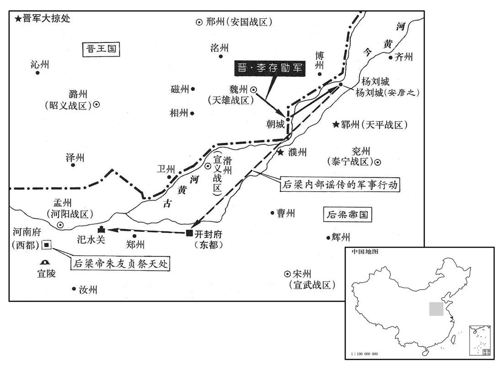
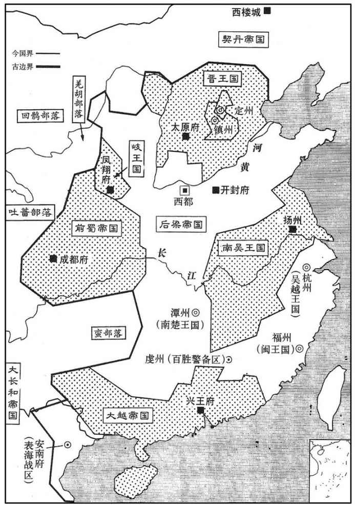
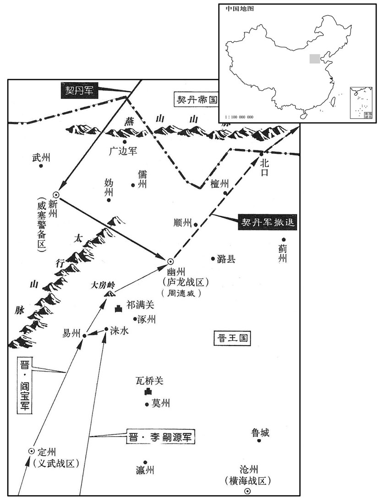
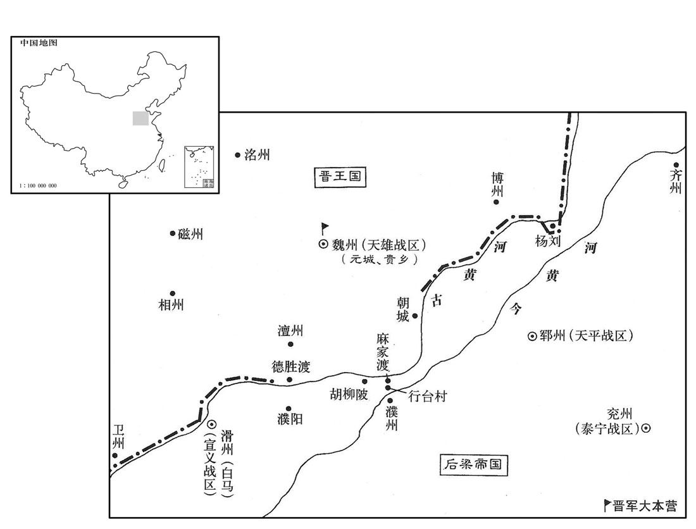
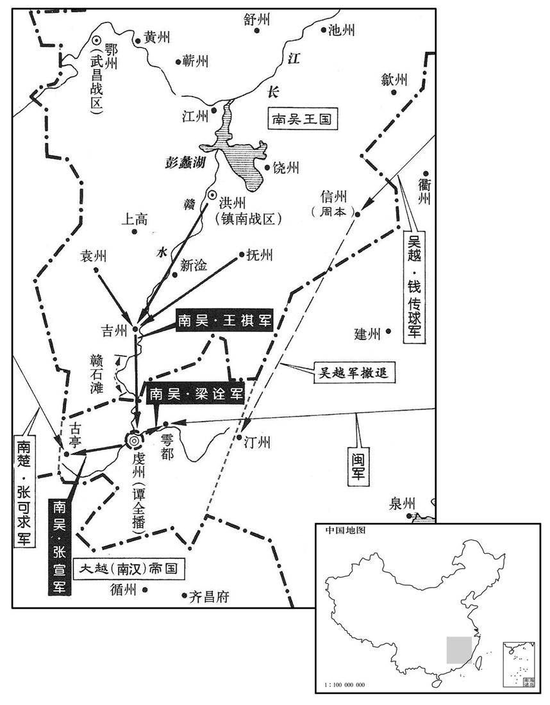
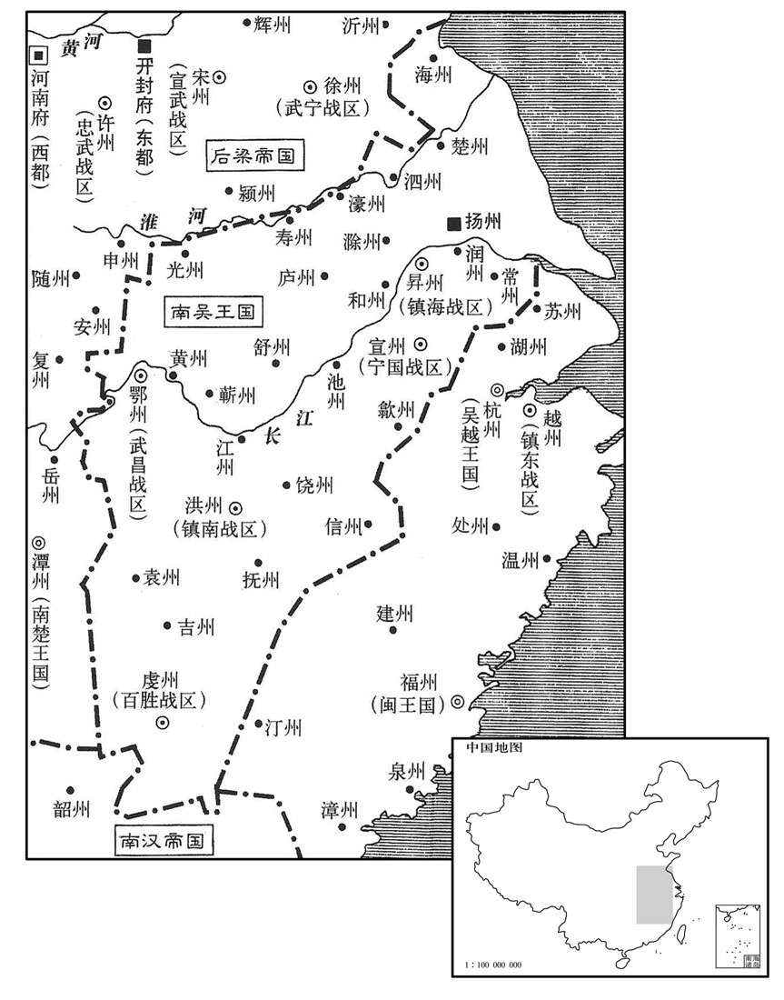
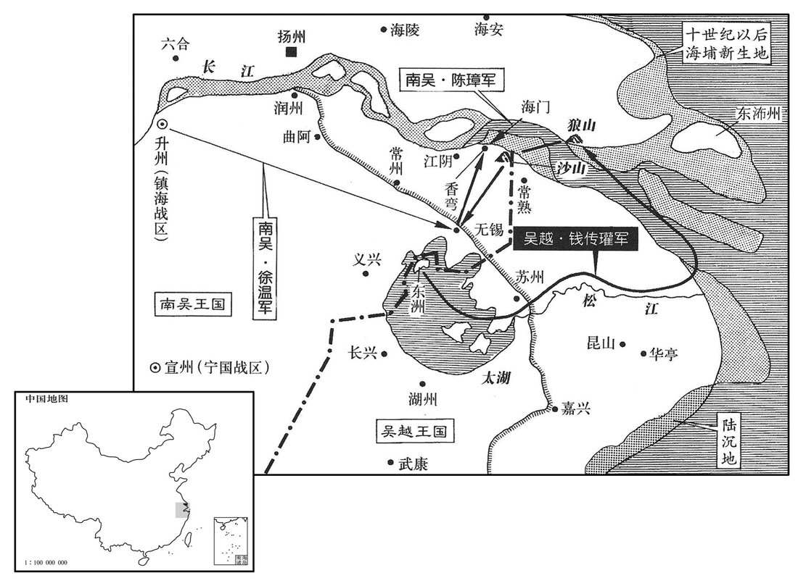
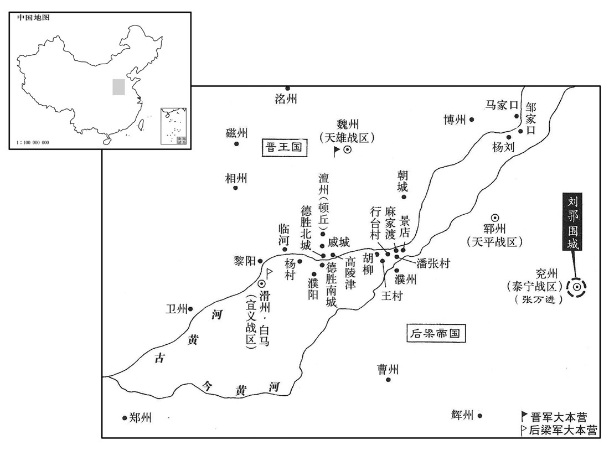

卷次与人物目录 / 卷270
资治通鉴 · 卷第二百七十【后梁纪五】
公元917年至公元919年 · 原文、白话与胡三省注
本页按胡注本编排保存全卷内容。白话采用本站所据译本，未可靠对应的内容另列说明；事件标题用于定位，并非原书文字。
本卷共109段原文，107段有译文对应，2段缺译或待核对。
卷第二百七十【后梁纪五】起强圉赤奋若（丁丑）七月，尽屠维单阏（己卯九月，凡二年有奇。
卷首原文与注释
均王中
公元917年 · 后梁均王贞明三年
贞明三年〔（丁丑、九一七）〕
上传原文的注释括号有异常，字符原样保留；无法可靠划分的段落默认全文显示。
本年记事分属相邻卷，按原书顺序分别保留：第269卷 · 第270卷。
本年事件索引（现代整理）
- 前蜀任桑弘志、王宗宏为招讨使并由王宗侃、刘知俊总领两路军
- 李存勖增派李存审率军援助幽州
- 前蜀因唐文扆与张格争权，贬黜毛文锡父子并罢庾传素相位
- 刘岩在番禺称帝，国号大越并改元乾亨
- 契丹围幽州近二百日，李嗣源等率七万晋军击败契丹解围
- 契丹任卢文进镇幽州，卢文进引契丹骑兵不断侵扰卢龙诸州
- 刘鄩入朝后因失守河朔被免平章事、贬任亳州团练使
- 梁廷加封钱镠为天下兵马元帅
- 李存勖回晋阳后与张承业争用公库钱，最终母子登门致歉
- 张承业阻止李存勖因轻慢而杀掌书记卢质
- 晋王诸夫人中刘氏最受宠，其父入宫相见反被刘氏鞭笞
- 越主刘岩遣刘瑭赴吴通告称帝并劝杨隆演称帝
- 前蜀任庾凝绩为吏部尚书、内枢密使
- 前蜀王建冬至祭祀圜丘
- 李存勖闻黄河结冰，认为天助晋军而急赴魏州
- 王建任刘知俊为都招讨使，后因忌其才而将其捕杀
- 前蜀大赦并改次年年号为光天
- 梁廷任张宗奭为天下兵马副元帅
- 梁帝论功任贺瓌为宣义节度使、北面行营招讨使
- 李存勖踏冰渡河突袭杨刘城并攻克之
- 赵岩劝梁帝赴洛阳南郊祭天，梁帝因此停礼仓皇返大梁
- 梁廷任张宗奭为西都留守
- 闽王王审知为子延钧娶刘岩之女
秋，七月，庚戌，蜀主以桑弘志为西北面第一招讨，王宗宏为东北面第二招讨，己未，以兼中书令王宗侃为东北面都招讨，武信节度使刘知俊为西北面都招讨。〔以伐岐也。〕
秋季，七月，庚戌（初三），前蜀主王建任命桑弘志为西北面第一招讨，王宗宏为东北面第二招讨。己未（十六日），任命兼中书令王宗侃为东北面都招讨，武信节度使刘知俊为西北面都招讨。
晋王以李嗣源、阎宝兵少，未足以敌契丹，辛未，更命李存审将兵益之。
晋王李存勖认为李嗣源、阎宝的兵力较少，不足与契丹国抗衡，辛未（二十八日），又命令李存审率兵去加强他们的兵力。

蜀飞龙使唐文扆居中用事，〔扆，隐岂翻。〕张格附之，与司徒、判枢密院事毛文锡争权。文锡将以女适左仆射兼中书侍郎、同平章事庾传素之子，会亲族于枢密院用乐，不先表闻，蜀主闻乐声，怪之，文扆从而谮之。八月，庚寅，贬文锡茂州司马，其子司封员外郎询流维州，籍没其家；贬文锡弟翰林学士文晏为荣经尉。〔荣经，汉严道县地，唐武德四年置荣经县，属雅州。九域志：在州南一百一十里。〕传素罢为工部尚书，以翰林学士承旨庾凝绩权判内枢密院事。凝绩，传素之再从弟也。〔同曾祖之弟为再从弟。从，才用翻。〕
前蜀飞龙使唐文在朝中掌权，张格依附于他，与司徒、判枢密院事毛文锡争夺权力。毛文锡准备把他的女儿嫁给左仆射兼中书侍郎、同平章事庾传素的儿子，亲族聚会在枢密院寻欢作乐，没有事先奏明前蜀主，前蜀主听到音乐声，感到很奇怪，唐文趁机说毛文锡的坏话。八月，庚寅（十三日），将毛文锡降为茂州司马。把毛文锡的儿子司封员外郎毛询流放到维州，并把他全家的财产没收归公。把毛文锡的弟弟翰林学士毛文晏贬为荣经县尉。把庾传素降为工部尚书，让翰林学士承旨庾凝绩暂管内枢密院的事情。庾凝绩是庾传素的本家弟弟。
清〔【章：十二行本「清」上有「癸巳」二字；乙十一行本同；孔本同；张校同；退斋校同。】〕海、建武节度使刘岩即皇帝位于番禺，〔汉书音义：番，音潘；禺，音愚。〕国号大越，大赦，改元干亨。以梁使赵光裔为兵部尚书，节度副使杨洞潜为兵部侍郎，节度判官李殷衡为礼部侍郎，并同平章事。建三庙，追尊祖安仁曰太祖文皇帝，父谦曰代祖圣武皇帝，兄隐曰烈宗襄皇帝；以广州为兴王府。
清海、建武节度使刘岩在番禺称帝，国号为大越，实行大赦，改年号为乾亨。任命后梁使者赵光裔为兵部尚书，节度副使杨洞潜为兵部侍郎，节度判官李殷衡为礼部侍郎，三人一并为同平章事。新修了三座祖庙，追尊祖父刘安仁为太祖文皇帝，父亲刘谦为代祖圣武皇帝，哥哥刘隐为烈宗襄皇帝，并把广州作为兴王府。

契丹围幽州且二百日，〔是年三月，契丹围幽州，事始见上卷。〕城中危困。李嗣源、阎宝、李存审步骑七万会于易州，〔阎宝班在李存审之下，而先书宝者，嗣源与宝先进屯涞水，而存审继之也。匈奴须知：涞水西至易州四十里，易州东北至幽州二百二十里。〕存审曰：「虏众吾寡，虏多骑，吾多步，若平原相遇，虏以万骑蹂吾陈，吾无遗类矣。」〔蹂，人九翻，又徐又翻。陈，读曰阵。〕嗣源曰：「虏无辎重，〔重，直用翻。〕吾行必载粮食自随，若平原相相遇，虏抄吾粮，〔抄，楚交翻。〕吾不战自溃矣。不若自山中潜行趣幽州，〔趣，七喻翻。〕与城中合势，若中道遇虏，则据险拒之。」甲午，自易州北行，庚子，踰大房岭，〔水经注：圣水出上谷郡西南谷，东南流径大防岭。又曰：良乡县西北有大防山，防水出其南。按易州即汉上谷郡地。范成大北使录：自良乡六十五里至幽州城外。此又驿路也。〕循涧而东。嗣源与养子从珂将三千骑为前锋，距幽州六十里，与契丹遇，契丹惊却，晋兵翼而随之。〔张左右翼而踵其后。〕契丹行山上，晋兵行涧下，每至谷口，契丹辄邀之，嗣源父子力战，乃得进。至山口，契丹以万余骑遮其前，将士失色；嗣源以百余骑先进，免冑扬鞭，胡语谓契丹曰：「汝无故犯我疆埸，晋王命我将百万众宜抵西楼，灭汝种族！〔此史家以华言译胡语而笔之于史也。胡峤入辽记曰：自幽州西北入居庸关，行几一月乃至上京，所谓西楼也。西楼有邑屋市肆。欧史四夷附录曰：契丹好鬼而贵日，每月朔旦东向而拜日；其大会聚、视国事，皆以东向为尊，西楼门屋皆东向。薛史曰：西楼距幽州三千里。埸，音亦。种，章勇翻。〕因跃马奋檛，三入其陈，斩契丹酋长一人。〔檛，侧瓜翻。陈，读曰阵；下同。酋，慈秋翻。长，知两翻。〕后军齐进，契丹兵却，晋兵始得出。李存命步兵伐木为鹿角，人持一枝，止则成寨。契丹骑环寨而过，寨中发寓弩射之，流矢蔽日，契丹人马死伤塞路。〔环，音患。射，而亦翻。塞，悉则翻。〕将至幽州，契丹列陈待之。存审命步兵陈于其后，〔陈于契丹陈后，将夹击之也。一曰以骑兵前进，令步兵陈于其后。〕戒勿动，先令羸兵曳柴然草而进，烟尘蔽天，契丹莫测其多少；因鼓噪合战，孝审乃趣后陈起乘之，〔羸，伦为翻。趣，读曰促。〕契丹大败，席卷其众自北山去，〔取古北口路而去。卷，读曰卷。〕委弃车帐铠仗羊马满野，晋兵追之，俘斩万计。辛丑，嗣源等入幽州，周德威见之，握手流涕。〔为虏所困，得救而解，喜极涕流。〕
契丹围困幽州将近二百天，幽州城内十分困难。晋将李嗣源、阎宝、李存审率领七万名士卒和骑丘在易州会师。李存审说：“敌众我寡，敌人的骑兵多，我们的步兵多，如果在平原上两军相遇，敌人用一万名骑兵践踏我们的阵地，我们的兵士将被他们活活踩死而没有活着回去的。”李嗣源说：“敌人没有多少军需，我们行军必须随军拉着粮食，如果在平原上两军相遇，敌人一定会抢我们的粮食，我军将不战自败。不如从山中偷偷地直抵幽州，形成和幽州城内结合的形势。如果在途中遇上敌人，我们就占据险要的地方来抵御他们。”甲午（十七日），李嗣源、阎宝、李存审率兵从易州向北出发，庚子（二十三日），翻过大房岭，沿着山涧向东进发。李嗣源和他的养子李从珂率领三千骑兵为前锋部队，在距离幽州六十里的地方，与契丹军队相遇。契丹军队感到惊恐而退却，晋军从两翼紧随其后。契丹军在山上走，晋军在山涧走，每到一个谷口，契丹军就拦截晋军，李嗣源父子奋力战斗，才能继续前进。到达山口时，契丹部队用一万多骑兵挡在晋军前面，普军将士吓得脸都变了色。李嗣源带领百余骑兵率先前进，他脱掉甲胄，扬鞭上马，并用契丹语对契丹人说：“你们无故侵犯我人的疆土，晋王命令我率兵百万直捣西楼，消灭你们的种族。”于是跃马奋击，三次冲入契丹军阵，斩杀契丹酋长一人。晋军后面的部队也赶了上来，一起向契丹军进攻，契丹军队退却，晋军才得以出了山口。李存审命令他的士卒伐木，做成防御营寨的鹿角，每人手持一根，部队停下来时，就做成营寨。契丹军队绕着晋军的营寨经过，晋军从营寨中万箭齐发，射击契丹军，飞出灵的箭遮天蔽日，契丹死伤的人马几乎把路堵塞。晋军快要到达幽州时，契丹军早已严阵以待。李存审命令部队在契丹军的后面摆好阵势，告诫他们暂不要动。他先命令疲弱的军队拿着点燃的柴草前进，使烟雾遮天，契丹人不知道晋军到底有多少人马。在这种情况下晋军击鼓喧闹，一起出战，李存审催促后面的军队乘势追击，契丹被打得大败，席卷其全部士卒从北山逃跑，满山遍野都是契丹军丢弃了的战车、帐蓬、铠甲、羊、马等。晋军乘胜追击，俘获和斩杀了的契丹兵数以万计。辛丑（二十四日），李嗣源等进入幽州，周德威见到他，握着他的手痛哭流涕。

契丹以卢文进为幽州留后，其后又以为卢龙节度使，文进常居平州，帅奚骑岁入北边，杀掠吏民。〔帅，读曰率；下同。晋入自瓦桥运粮输蓟城，〔九域志：瓦桥北至涿州一百二十里，涿州北至蓟城一百二十里。蓟，音计。〕虽以兵援之，不免抄掠。契丹每入寇，则文进帅汉率为乡导，〔乡，读曰向。〕卢龙巡属诸州为之残弊。〔卢龙诸州，自唐中世以来自为一域，外而捍御两蕃，内而连兵河朔，其力常有余。及并于晋，则岁遣粮援继之而不足，此其故何也﹖保有一隅者其心力专，广土众民其心力有所不及也。诗云：无田甫田，维莠骄骄。信矣！为于伪翻；不为承、誓为、为吾、请为同。〕
契丹任命卢文进为幽州留后，后来又任命他为卢龙节度使。卢文进经常居住在平州，每年都要率领奚人骑兵人侵晋国的北部，杀掠百姓。晋国人从瓦桥运液到蓟州，虽然有部队护送，但也不免被契丹人所抄掠。每逢契丹人侵略，卢文进就带领汉族士兵作为向导，卢龙巡守所属各州都被抢劫得残破不堪。
刘鄩自滑州入朝，朝议以河朔失守责之，〔河朔失守事见上卷。朝，直遥翻。〕九月，落鄩平章事，左迁亳州团练使。〔当其时不能治也，待其入朝而后责之，失政刑矣。〕
刘从滑州回到朝廷，朝廷决定以失守河朔而处罚他。九月，解除刘的平章事，贬调他出任亳州团练使。
冬，十月，己亥，加吴王镠天下兵马元帅。
冬季，十月，己亥（二十三日），后梁帝加封吴越王钱为天下兵马元帅。
晋王还晋阳。〔自魏州还晋阳。〕王连岁出征，凡军府政事一委监军使张承业，承业劝课农桑，畜积金谷，收市兵马，征租行法不宽贵戚，由是军城肃清，〔军城，谓晋阳军城也。〕馈饷不乏。王或时须钱蒱博及给赐伶人，而承业靳之，〔靳，居焮翻，吝惜也。〕钱不可得。王乃置酒钱库，令其子继岌为承业舞，承业以宝带及币马赠之。王指钱积呼继岌小名谓承业曰：「和哥乏钱，七哥宜以钱一积与之，带马未为厚也。」〔张承业第七。晋王以兄事承业，呼之为七哥。〕承业曰：「郎君缠硕皆出承业俸禄，唐人凡为人舞，人则以钱彩宝货谢之，谓之缠头。俸，扶用翻。〕此钱，大王所以养战士也，承业不敢以公物为私礼。」王不悦，凭酒以语侵之，承业怒曰：「仆老敕使耳！非为子孙计惜此库钱，所以佐王成霸业也，不然，王自取用之，何问仆为！不过财尽民散，一无所成耳。」〔晋王他日率如张承业之言。〕王怒，顾李绍荣索剑，承业起，挽王衣〔索，山客翻。挽，武远翻，引也。〕泣曰：「仆受先王顾托之命，誓为国家诛汴贼，〔朱氏居汴，李氏名其为贼。〕若以惜库物死于王手，仆下见先王无愧矣。〔先王，谓晋王克用。〕今日就王请死！」阎宝从旁解承业手令退，承业奋拳殴宝踣地，骂曰：〔殴，乌口翻。踣，蒲北翻。〕「阎宝，朱温之党，受晋大恩，〔言阎宝北梁降晋，晋不杀而宠贵之。〕曾不尽忠为报，顾欲以谄媚自容邪！」曹太夫人闻之，遽令召王，〔史书曹太夫人者，以见嫡母刘夫人不可得而令其子。〕不惶恐叩头，谢承业曰：「吾以酒失忤七哥，〔忤，丑故翻。〕必且得罪于太夫人，七哥为吾痛饮以分其过。」王连饮四卮，承业竟不肯饮。王入宫，太夫人使人谢承业曰：「小儿忤特进，〔张承业于时官特进，意亦晋王承制授之也。〕适已笞之矣。」明日，太夫人与王俱至承业第谢之。〔史言晋王之在魏，皆张承业足馈饷以辅之；亦内有曹夫人，故承业得行其志。〕未几，〔几，居岂翻。〕承制授承业开府仪同三司、左卫上将军、燕国公。承业固辞不受，但称唐官以至终身。
晋王回到晋阳。由于连的出征，凡军府政事一律委托监军使张承业办理，张承业积极督促农桑生产，储备钱粮，收买兵马，征收赋税，执法严格，从不宽容权贵亲戚，因此晋阳城内平静，军队粮饷不缺。晋王有时候需要钱去博戏或者赏赐给乐官、伶人，张承业吝惜不肯给他，晋王也拿不到钱。于是晋王在钱库里摆了一桌酒席，让他的儿子李继岌给张承业跳舞，张承业用饰有珍宝的带子和币马赠送给李继岌。晋王指着库里积存的钱物高声叫着李继岌的小名对张承业说：“和哥缺钱，七哥你应当用一堆积钱送给他，宝带、币马不算丰厚。”张承业说：“我送给少爷的彩礼，都是从我的俸禄里支出的，钱库里的钱，是大王用来养战士用的，我不敢用公物作为个人的私礼。”晋王听了很不高兴，借酒用话讽刺他，张承业生气地说：“我是皇上的老臣，并不是为我的子孙打算，我之所以珍惜这库里的钱，是为了帮助大王成就霸业，不然的话，大王可以自己随便取用，何必还问我呢？不过钱财用完，百姓也就会远离你，你的事业将一无所成。”晋王十分生气，回过头向李绍荣要剑，张承业站起来，拉住晋王的衣服，哭着说：“我受先王临终之命，发誓为国家诛灭汴梁朱氏，如果因为吝惜库存的钱物而死于大王手下，我在地下见到先王也就无愧了。今日请大王处死好了！”阎宝从旁拉开张承业的手，让他退下。张承业气愤地使劲用拳把阎宝打倒在地，并且骂他说：“阎宝，你是朱温的同党，降晋后晋国对你有大恩大德，你不尽忠报国，反而想用谄媚的手段来求得安身吗？”曹太夫人听说这件事后，急忙让人去召晋王，晋王惊慌地直叩头，向张承业道歉，说：“我因为喝多了酒而顶撞了七哥，这也必然得罪于太夫人，请七哥为了减轻我的过错而痛饮几杯。”于是晋王连饮四杯，而张承业却一杯也不肯喝。晋王入宫后，曹太夫人派人去向张承业道歉，并说：“小儿顶撞了特进，刚才已经责打了他。”第二天，曹太夫人和晋王一起来到张承业的府第向他道歉。不久，按照先帝的遗旨，授予张承业开府仪同三司、左卫上将军、燕国公。张承业一再推辞不接受，一直到死都只称唐官。
掌书记卢质，嗜酒轻傲，尝呼王诸弟为豚犬，王衔之；承业恐其及祸，乘间言曰：「卢质数无礼，〔间，古苋翻。数，所角翻。请为大王杀之。」王曰：「吾方招纳贤才以就功业，七哥何言之过也！」承业起立贺曰：「王能如此，何忧不得天下！」质由是获免。〔史言张承业惟能足兵，且能保护士君子。〕
掌书记卢质嗜酒而且轻傲，曾经称呼晋王的弟弟们为猪狗，晋王怀恨在心。张承业害怕他因此招致祸患，抽空对晋王说：“卢质曾经多次无礼，请代为大王杀掉他。”晋王说：“我正在招贤纳士来完成我的功业，七哥为什么要说这样过份的话？”张承业站起来祝贺他说：“大王能够如此，还怕得不到天下吗？”卢质因此得以免祸。
晋王元妃卫国韩夫人，次燕国伊夫人，次魏国刘夫人。刘夫人最有宠，〔书晋宫之次者，以见其宫中贯鱼失序。〕其父成安人，〔成安，汉斥丘县，北齐置成安县，唐属相州，时属魏州。九域志：成安在魏州西一百里。〕以医卜为业。夫人幼时，晋将袁建丰掠得之，入于王宫，性狡悍淫勡，〔悍，下罕翻，又侯旰翻。〕从王在魏；父闻其贵，诣魏宫上谒，〔上，时掌翻。〕王召袁建丰示之。建丰曰：「始得夫人时，有黄须丈人护之，此是也。」王以语夫人，〔语，牛倨翻。〕夫人方与诸夫人争宠，以门地相高，耻其家寒微，大怒曰：「妾去乡时略可记忆，妾父不幸死乱兵，妾守尸哭之而去，今何物田舍翁敢至此！」命笞刘叟于宫门。〔父且笞之，而何有于君！异日李存渥之事，无足怪也。〕
晋王的元妃是卫国韩夫人，其次是燕国伊夫人，再次是魏国刘夫人。刘夫人最受晋王宠爱，她的父亲是成安人，以行医占卜为业。刘夫人小的时候，被晋将袁建丰抢了回来，把她送进了王宫。刘夫人性情狡猾泼悍，放荡，好忌妒人。她跟随晋王在魏，其父听说她已经显贵，就到魏宫拜见晋王，晋王召袁建丰来辨认。袁建丰说：“当初得到刘夫人时，有一个黄须老头保护着她，就是这个老人。”晋王把这番话告诉了刘夫人，刘夫人这时正和其他几位夫人争宠，互相比门地高低，对她的出身寒微感到耻辱。她非常生气地说：“我离开家乡时的情景还大概记得，我的父亲不幸死于兵乱，我曾守着他的尸体痛器，然后才离开了他，今天哪里来的什么乡巴佬敢到这里？”于是让人在宫门口把刘老头儿打了一顿。
越主岩遣客使刘瑭使于吴，告即位，〔是年八月，刘岩称帝。〕且劝吴王称帝。
越主刘岩派客省使刘瑭出使吴国，告诉吴王他已经即位，并且劝吴王也称帝。
闰月，戊申，蜀主以判内枢密院庾凝绩为史部尚书、内枢密使。
闰十月，戊申（初二），前蜀主任命判内枢密院庾凝绩为吏部尚书、内枢密使。
十一月，丙子朔，日南至，蜀主祀圜丘。
十一月，丙子朔（初一），正逢冬至，前蜀主去圜丘祭天。
晋王闻河冰合，曰：「用兵数岁，限一水不得渡，贞明元年，晋得魏博兵，始窥河上；若以破夹寨为用兵之始，则已十年矣。〕今冰自合，天赞我也。」亟如魏州。
本段缺少可靠对应白话，原文完整保留；未使用生成译文。
蜀主以刘知俊为都招讨使，〔见是年七月。〕诸将皆旧功臣，多不用其命，且疾之，故无成功。〔伐岐无功也。〕唐文扆数毁之；〔数，所角翻。〕蜀主亦忌其才，尝谓所亲曰：「吾老矣，知俊非尔辈所能驭也。」十二月，辛亥，收知俊，称其谋粄，斩于炭市。〔刘知俊惧不见容于梁而奔岐，惧不见容于岐而奔蜀，率亦不为蜀所容。挟虎狼之性而附入，人必虞其搏噬，其能容之乎！〕
前蜀主任用刘知俊为都招讨使，各位将领都是原来的有功之臣，很多人不听从他的命令，而且还嫉妒他，所以他没建立什么战功。唐文经常诋毁他，前蜀主也嫉妒他的才能，曾对亲近的人说：“我已经老了，刘知俊不是你们这些人所能驾驭的。”十二月，辛亥（初六），拘捕了刘知俊，说他想阴谋叛乱，在炭市把他斩杀。
癸丑，蜀大赦，改明年元曰光天。
癸丑（初八），前蜀大赦，改明年的年号为光天。
壬戌，以张宗奭为天下兵马副元帅。
两版字句有差异，建议核对原文。
壬戌（十七日），后梁帝任命张宗为天下兵马副元帅。
帝论平庆州功，〔贺緕平庆州，见上卷上年。〕丁卯，以天龙虎统军贺緕为宣义节度使、同平章事，寻以为北面行营招讨使。〔为贺緕不能拒晋张本。〕
后梁帝论评平定庆州的战功，丁卯（二十二日），任命左龙虎统军贺为宣义节度使、同平章事，不久又任命他为北面行营招讨使。
戊辰，晋王畋于朝城。〔朝城，本汉东武阳县，后周曰武阳，唐改曰朝城。九域志：朝城县在魏州东南八十里，又三十里至河。〕是日，大寒，晋王视河冰已坚，引步骑稍渡。梁甲士三千戍杨刘城，绿河数十里，列栅相望，晋王急攻，皆陷之。进攻杨刘城，使步兵斩其鹿角，负葭苇塞堑，〔陆佃埤雅曰：苇即今之芦，一名葭。葭，苇之未秀者也。雈，即今之荻，一名蒹。蒹，萑之未秀者也。至秋坚成，谓之萑苇；萑小而苇大。字说曰：芦谓之葭，其小曰萑；荻谓之蒹，其小曰苇。荻强而葭弱，荻高而葭下。塞，悉则翻。〕四面进攻，即日拔之，获其守将安彦之。
戊辰（二十三日），晋王在朝城打猎。这一天，天气特别冷，晋王看到黄河的冰很坚固，就率领步兵、骑兵过河。后梁军三千士卒驻扎在杨刘城，沿河数十里，栅垒相望，晋王迅速发起进攻，全部攻克了这些栅垒。接着进攻杨刘城，派出步兵先夺取后梁军营寨，然后用芦苇塞满防御的堑壕，从四面发起进攻，当天就攻下了杨刘城，并抓获守将安彦之。
先是，租庸使、户部尚书赵岩言于帝曰：「陛下践阼以来，尚未南郊，议者以为无异藩侯，〔先，悉荐翻。〕为四方所轻。请幸西都行郊礼，遂谒宣陵。」〔宜陵在河南伊阙县，故请帝因郊而谒陵。〕敬翔谏曰：「自刘鄩失利以来，〔刘鄩败，见上卷上年。〕公私困竭，人心惴恐；〔惴，之睡翻。〕今展礼圜丘，必行赏赉，是慕虚名而受实弊也。且勍敌近上，〔勍敌，谓晋也。勍，渠京翻。〕乘舆岂宜轻动！〔乘，绳证翻。〔俟北方既平，报本未晚。」〔晋书曰：祀者帝王之重事，所以报本反始也。〕帝不听。己巳，如洛阳，阅车服，饰宫阙。郊祀有日，闻杨刘失守，道路讹言晋军已至大梁，扼汜水矣，扼汜水，谓扼虎牢之险也。〕从官皆忧其家，相顾涕泣；〔从，才用翻。〕帝惶骇失图，遂罢郊祀，奔归大梁。
在杨刘城失守以前，后梁租庸使、户部尚书赵岩曾对后梁帝说：“陛下即位以来，还没有去南郊祭天，议论这件事的人认为陛下和诸侯没什么两样，被四方所轻视。请陛下去西都行郊祀礼，并谒拜宣陵。”敬翔进谏说：“自从刘失利以来，公私都处于十分困难的时刻，人心惶惶。现在要去祭祀圜丘，必定要施行赏赐，这是为了图虚名，而受实害。况且晋国劲敌近在黄河边上，御驾车马怎么轻易出动？等到北方平定以后，再去郊祀也不晚。”后梁帝没有听从敬翔的进谏。己巳（二十四日），后梁帝到了洛阳，视察了御用的车子和章服，装饰了宫阙。去南郊祭祀的日子已定，突然听说杨刘城失守，道路上的人都传说晋军已经到了大梁，并扼住汜水。跟从后梁帝出行的官员们都很担忧自己的家，相互哭泣。后梁帝恐慌而失去了主意，于是停止了郊祀，奔回大梁。
甲戌，以河南尹张宗奭为西都留守。
甲戌，（二十九日），后梁帝任命河南尹张宗为西都留守。
是岁，闽王审知为其子牙内都指挥使延钧娶越主岩之女。〔为，于伪翻。〕
这一年，闽王王审知给他的儿子牙内都指挥使王延钧娶了越主刘岩的女儿。
译本中未与胡注本可靠对应的内容
以下另列供核对版本差异，不并入胡注本正文。
译本所附古文
[12]晋王闻河冰合，曰：“用兵数岁，限一水不得渡，今冰自合，天赞我也。”亟如魏州。
译本白话
晋王听说黄河上的冰已结满河床，说：“打了好几年仗，由于受黄河的限制，不能渡河作战，如今河床自己结满了冰，这是天助我们。”于是他很快地赶到魏州。
公元918年 · 后梁均王贞明四年
四年〔（戊寅、九一八）〕
上传原文的注释括号有异常，字符原样保留；无法可靠划分的段落默认全文显示。
本年事件索引（现代整理）
- 前蜀大赦并恢复国号为蜀
- 梁帝回到大梁，敬翔上疏批评朝政却未被采纳
- 吴廷遣王祺率军攻虔州，吴军借水工引路直抵城下
- 王衍沉湎酒色、游乐无度，王建嫌恶张格却未能罢黜
- 谢彦章率数万梁军攻杨刘城并决河阻隔晋军
- 前蜀任王宗侃为东、西两路伐岐军都统
- 钱镠首次设置元帅府并设官属
- 王建封王宗平为忠王、王宗特为资王
- 岐王再次遣使向前蜀求和
- 梁廷任萧顷为中书侍郎、同平章事
- 保大节度使高万金去世，高万兴兼领保大军
- 梁司空赵光逢告老，改以司徒致仕
- 王建病重召回王宗弼，并嘱大臣若太子不堪重任则另择王氏子弟
- 王宗弼等得知唐文扆谋划后入宫揭发其罪，唐文扆被贬
- 王建命庾凝绩掌管财赋、中书任命与刑狱，宋光嗣主管都城军务
- 唐文扆被贬流放，宋光嗣接任内枢密使，宦官由此开始掌权
- 王建去世，太子王衍即位并任宋光嗣判六军诸卫事
- 王衍下令杀唐文扆、王保晦及唐文裔
- 徐知训骄横淫暴，威胁李德诚索取家妓
- 徐知训戏弄吴王杨隆演、无君臣礼，群臣不敢进言
- 徐知训与徐知询屡次无礼对待徐知诰，徐知训还曾设伏欲杀他
- 朱瑾借家妓与爱马设宴，伏杀徐知训后遭吴王惊惧拒绝
- 徐知训被杀后，徐知诰从润州赶至广陵接掌吴政
- 朱瑾弑徐知训后自杀，徐温清除其党并命严可求擒杀米志诚
- 李存勖亲自率军涉水突击梁军，击败谢彦章并攻取滨河四寨
- 唐文扆死后张格仍遭贬黜，杨玢、许寂、潘峤亦受牵连
- 王衍封王宗弼等诸将为王，内外任免多由王宗弼操控，蜀政渐衰
- 徐温怀疑诸将参与朱瑾之谋，徐知诰说明徐知训失政，徐温遂任知诰掌政
- 徐知诰整顿吴国政务、减免旧税并改以谷帛纳税，江淮经济渐强
- 徐知诰暗中倚重宋齐丘，二人借夜谈与画灰谋划
- 吴军久攻虔州不克且大疫，谭全播向吴越、闽、楚求援
- 李存勖集结多镇步骑及各部落兵，准备大举进攻梁
- 蜀王宗鼎辞去军职，认为亲王典兵易生祸乱
- 张万进因受权贵索贿而降晋，梁廷命刘鄩讨伐
- 前蜀顺德皇后去世
- 王衍任用王廷绍等宦官为将军军使，使其干预政事而为蜀患
- 李存勖自魏州赴杨刘，掠郓、濮后驻军麻家渡与梁军对峙
- 赵王王镕、王处直劝李存勖勿轻身犯险，李存勖仍以亲征为常
- 李存勖不听李存审劝阻，亲率轻骑挑战梁营险遭围困
- 刘信遣张宣夜袭楚军古亭营，吴军再击援楚的吴越、闽军
- 梅山蛮侵扰邵州，被楚将樊须击退
- 王衍准许宋光嗣让出判六军之职给王宗弼
- 刘信攻虔州不克而纳质受赂撤围，徐温怒而逼他再次进兵
- 前蜀安葬王建于永陵，庙号高祖
- 刘岩祭祀南郊、大赦并改国号为汉
- 刘信惧徐温责罚，回师攻破虔州并俘获谭全播
- 吴越虔州入贡道路断绝，改由海路前往大梁
- 徐温认为自己权重位卑，建议杨隆演称帝而遭拒
- 严可求曾劝徐温以徐知询代掌吴政，后以吴应先建国为由说服徐温
- 晋王欲进攻大梁，但梁军坚壁拒战，晋军逼近梁营
- 贺瓌与谢彦章因争功生隙，贺瓌设宴伏杀谢彦章等将领
- 李存勖不顾周德威劝阻，率军直接向汴州进发
- 前蜀改次年年号为乾德
- 贺瓌得知晋军西进后弃营追赶，周德威劝李存勖坚守待敌未果
- 晋军以银枪都冲击梁阵，辎重与幽州军混乱，周德威父子阵亡
- 李存勖收拢散兵夺取土山，占据战场优势
- 阎宝劝李存勖乘梁军步卒疲乏进攻，晋军大破梁军
- 李存勖得知周德威父子战死后痛哭自责
- 李嗣源误以为晋军败退而北渡，获悉胜讯后回到李存勖身边
- 契丹北大王撒剌阿拨谋反事败后投奔晋国
- 晋军抵达德胜渡，梁败兵逃回大梁引发恐慌
春，正月，乙亥朔，蜀大赦，复国号曰蜀。〔蜀改国见上卷二年。〕
春季，正月，乙亥朔（初一），前蜀大赦，恢复国号为蜀。
帝至大梁。〔自洛阳还至大梁。〕晋兵侵掠至郓、濮而还。〔晋拔杨刘，杨刘属郓州界，又西则濮州界。郓，音运。濮，博木翻。〕敬翔上疏曰：「国家连年丧师，上，时掌翻。丧，息浪翻。〕疆土日蹙。陛下居深宫之中，所与计事者皆左右近习，岂能量敌国之胜负乎！〔量，音良。〕先帝之时，奄有河北，〔开平之间，幽、沧镇、定、魏皆附于梁，故云然。〕亲御豪杰之将，犹不得志。〔谓夹寨、柏乡、蓨县之师皆不得志于晋。〕今敌至郓州，阶下不能留意。臣闻李亚子继位以来，于今十年，〔开平元年，晋王存勖嗣位，于今十一年。〕攻城野战，无不亲当矢石，近者攻杨刘，身负束薪为士卒先，一鼓拔之。陛下儒雅守文，晏安自若，使贺緕辈敌之，而望攘逐寇雠，非臣所知也。陛下宜诣访黎老，〔黎，众也。〕别求异策；不然忧未艾也。臣虽驽怯，〔驽，音奴。〕受国重恩，陛下必若乏才，乞于边垂自效。」疏奏，赵、张之徒言翔怨望，帝遂不用。
后梁帝回到大梁。晋军一直侵掠到郓州、濮州以后才率军而还。敬翔上疏说：“国家连年战事失利，疆土日益缩小。陛下深居宫中，和您一起共商大事的人都是您的左右亲幸之人，怎么能估量到敌国的胜负呢？先帝在世的时候，拥有河北的全部疆土，亲自驾驭着豪杰将士，仍不得志。今天敌人已经到了郓州，还不能引起陛下的注意。我听说李存勖继位以来，到今年已经十年了，每当攻城作战，无不亲自冲锋陷阵，最近攻打杨刘时，亲自背着柴束走在士卒的前面，结果一鼓攻下杨刘城。陛下温文儒雅自守，安然自若，而派贺之流去抵挡敌人，期望他们驱逐敌寇，我不知道他们能做什么。陛下应当广泛询访老人，另外寻找一些别的方法。如果不能这样，忧患就不能停止。我虽然无才，但国家给我的恩情很大，陛下如果一定缺乏人才，我请求到边疆为国效力去。”他的奏书送给后梁帝以后，赵岩、张归霸之流说敬翔是在发泄怨恨。后梁帝没有起用他。
吴以右都押牙王祺为虔州行营都指挥使，将洪、抚、袁、吉之兵击谭全播。严可求以厚利募赣石水工，故吴兵奄至虔州城下，虔人始知之。〔虔州水行至吉州，有赣石之险。吴先募水工习于水道，故舟行无碍。注详见辩误。赣，音绀。〕
吴王任命右都押牙王祺为虔州行营都指挥使，并让他率领洪、抚、袁、吉的部队去攻打谭全播。严可求用厚禄招募了一些熟悉赣石之险的水工，所以吴兵全部到达虔州城下时，虔州人才知道。
蜀太子衍好酒色，乐游戏。〔好，呼到翻。乐，五教翻。〕蜀主尝自夹城过，闻太子与诸王鬬鸡击球喧呼之声，〔蜀盖仿长安之制，附来城为诸王宅。〕叹曰：「吾百战以立基业，此辈其能守之乎！」由是恶张格，而徐贤妃为之内主，竟不能去也。〔张格赞立宗衍，见二百六十八卷干化二年。恶，乌路翻。去，羌吕翻。〕信王宗杰有才略，屡陈时政，蜀主贤之，有废立意；二月，癸亥，宗杰暴卒，蜀主深疑之。
前蜀太子王衍嗜酒好色，喜欢游戏。前蜀主曾经从夹城路过，听到太子和诸王斗鸡击球喧闹的声音，叹息地说：“我身经百战建立的大业，这些人能够守得住吗？”因此对当时拥立王衍为太子的张格产生恶感，但因为徐贤妃在内为之作主，所以就没有废除太子。信王王宗杰很有才略，经常陈述对时政的意见，前蜀主很器重他，因而产生了废王衍立宗杰的想法。二月，癸亥（二十日），王宗杰突然病死，前蜀主对他的死感到十分怀疑。
河阳节度使、北面行营排陈使谢彦章将兵数万攻杨刘城。甲子，晋王自魏州轻骑河上；彦章筑垒自固，决河水，弥浸数里，以限晋兵，晋兵不得进。〔谢彦章，梁之骑将也，惧晋兵之冲突，决河水以限之。幽、并之突骑非南兵之所能敌，自古然也。弥，音弥。〕彦章，许州人也。安彦之散卒多聚于兖、郓山谷为群盗，以观二国成败，晋王招募之，多降于晋。〔降，户江翻。〕
后梁河阳节度使、北面行营排阵使谢彦章率领好几万兵向杨刘城发起进攻。甲子（二十一日），晋王率领轻骑从魏州直达黄河边上。谢彦章修筑起壁垒坚守阵地，并决开黄河，河水弥漫了好几里，用来阻止晋军，晋军不能前进。谢彦章是许州人。安彦之被打败以后，他的士卒很多人聚集在兖州、郓城一带的山谷之中成为强盗，坐观梁、晋二国的成败。后来晋王招募他们，其中有不少人就投靠了晋王。
己亥，蜀主以东面招许使王宗侃为东、西两路诸军都统。〔此伐岐东、西两路之兵也；东路出宝鸡，西路出秦陇。
本段缺少可靠对应白话，原文完整保留；未使用生成译文。
三月，吴越王镠初立元帅府，置官属。〔前年梁加钱镠诸道兵马元帅，去年又加天下余马元帅。〕
三月，吴越王钱开始设置元帅府，并安排了一些官属。
夏，四月，卯朔，蜀主立子宗平为忠王，宗特为资王。
夏季，四月，癸卯朔（初一），前蜀主立子王宗平为忠王，王宗特为资王。
岐王复遣使求好于蜀。〔岐与蜀绝，见二百六十七卷干化元年。复，扶又翻。〕
岐王派出使者到前蜀，请求互通友好。
己酉，以吏部侍郎萧顷为中书侍郎、同平章事。
己酉（初七），后梁帝任命吏部侍郎萧顷为中书侍郎、同平章事。
保大节度使高万金卒。癸亥，以忠义节度使高万兴兼保大节度使，并镇鄜、延。〔太祖改保塞军为忠义军。高万兴，万金之兄也；兄弟并镇，今并为一。〕
后梁保大节度使高万金去世。癸亥（二十一日），任命忠义节度使高万兴兼任保大节度使，并让他镇守州和延州。
司空兼门下侍郎、同平章事赵光逢告老，己巳，以司徒致仕。
后梁司空兼门下侍郎、同平章事赵光逢因老辞官，己巳（二十七日），以司徒的身分回乡归居。
蜀主自永平末〔梁干化元年，蜀改元永平；梁贞明二年，蜀改元通正。〕得疾，昏瞀，〔瞀，莫候翻。〕至是增剧；以北面行营招讨使兼中书令王宗弼沉静有谋，五月，召还，以为马步都指挥使。乙亥，召大臣入寝殿，告之曰：「太子仁弱，朕不能违诸公之请，踰次而立之；〔即谓张格令诸公署表时事。〕若其不堪大业，可置诸别宫，幸勿杀之。但王氏子弟，诸公择而辅之。徐妃兄弟，止可懮其禄位，慎勿使之掌兵预政，以全其宗族。」
前蜀主王建自从永平末年得病以来，一直视力昏暗不明，到现在更加严重。因为北面行营招讨使兼中书令王宗弼沉着有谋略，五月，把他召回，任命为马步都指挥使。乙亥（初三），王建让大臣们到他的寝殿，告诉他们说：“太子没有什么能耐，但我不能违背诸位的请求，越过次序而立了他。如果他担不起大业，可以把他安置在别的宫中，但不要把他杀死。只要是王氏子弟，诸位可以选择辅助他们当中有才能的人。徐妃的兄弟们，只可以照顾他们的俸禄和官位，一定不要让他们掌握兵权和参与政事，以成全他们的宗族。”
内飞龙使唐文扆久典禁兵，参预机密，欲去诸大臣，〔去，羌吕翻。〕遣人守宫门；王宗弼等三十余人日至朝堂，不得入见，〔见，贤遍翻。〕文扆屡以蜀主之命慰抚之，伺蜀主殂，即作难。〔伺，相吏翻。，难，乃旦翻。〕遣其党内皇城使潘在迎傎察外事，〔傎，丑郑翻，伺也。〕在迎以其谋告宗弼等；宗弼等排闼入，言文扆之罪，以天册府掌书记进延昌权判六军事，〔蜀置天策府，见上卷干化四年。将罪唐文扆，先夺其判六军事。〕召太子入侍疾。丙子，贬唐文扆为眉州刺史。翰林学士承旨王保晦坐附会文扆，削官爵，流泸州。在迎，炕之子也。〔潘炕亦蜀主所亲任者也，入筦枢密，出居方镇。炕，苦浪翻。〕
内飞龙使唐文掌管皇帝的亲兵时间已经很长，经常参预一些机密的事情。他打算除去诸大臣，于是派人把守住宫门。王宗弼等三十余人到朝堂，但不得入见前蜀主，唐文常以前蜀主的名义来慰抚他们，等前蜀主一死，他就发难。他还派出同党内皇城使潘在迎到外面去侦察，潘在迎把唐文的阴谋告诉了王宗弼等人。于是王宗弼等推开宫门进去，向前蜀主说明了唐文的罪行，前蜀主让天册府掌书记崔延昌暂管六军事，让太子入宫侍候自己的病。丙子（初四），把唐文降为眉州刺史。翰林学士承旨王保晦因附会唐文，也削了他的官位，把他流放到泸州。潘在迎是潘炕的儿子。
丙申，蜀主诏中外财赋、中书除授、诸司刑狱案牍专委庾凝绩，都城及行营军旅之事委宣徽南院使未光嗣。
丙申（二十四日），前蜀主下诏，将中外财赋、中书除授、诸司刑狱案牍的事情专门委派给庾凝绩管理，将都城以及行营军旅的事情委派宣徽南院使宋光嗣管理。
丁酉，削唐文扆官爵，流雅州。辛丑，以宋光嗣为内枢密使，与兼中书令王宗弼、宗瑶、宗绾、宗夔并受遗诏辅政。初，蜀主虽因唐制置枢密使，专用士人，〔唐制，枢密使本用宦者。〕及唐文扆得罪，蜀主以诸将多许州故人，〔蜀主本许州舞阳人，其诸将亦多许人。〕恐其不为幼主用，故以光嗣代之。自是宦者始用事。〔为蜀以宦者亡张本。〕
丁酉（二十五日），削了唐文的官职爵位，流放到雅州。辛丑（二十九日），任命宋光嗣为内枢密使，并和兼中书令王宗弼、王宗瑶、王宗绾、王宗夔一同受遗诏辅政。当初，前蜀主虽然依照唐制设置了枢密使，专用士人，到唐文犯罪时，前蜀主认为好多将领都是许州的旧友，害怕他们不能听从幼主的使用，所以用宦者宋光嗣取代士人做枢密使。从此宦者才掌握权力。
六月，壬寅，〔【章：十二行本「寅」下有「朔」字；乙十一行本同；张校同。】〕蜀主殂。〔考异曰：北梦□言云：「余闻宗弼亲吏曹处琪言：建疑信王暴卒，唐文扆与徐妃、张格阴谋使尚食进鸡烧饼因置毒。建疾困，大臣魏弘夫等请诛文扆。建曰：『太子好酒色，若不克负荷，幸无杀之。徐氏兄弟勿与兵权。』言讫，长吁而逝。」刘恕按：旧史贬文扆后二十七日蜀主始殂，疑曹处琪之妄，孙光宪从而记之。〕癸卯，太子即皇帝位。〔名衍，字化源，建幼子也。〕尊徐贤妃为太后，〔衍母也。〕徐淑妃为太妃。以宋光嗣判六军诸卫事。
六月，壬寅（初一），前蜀主去世。癸卯（初二），太子王衍即皇帝位。尊崇徐贤妃为太后，徐淑妃为太妃。任命宋光嗣判六军诸卫事。
乙卯，杀唐文扆、王保晦。命西面招讨副使王全〔【章：十二行本「全」作「宗」；乙十一行本同；孔本同。】〕昱杀天雄节度使唐文裔于秦州，〔贞明二年，蜀主遣唐文裔伐岐，遂镇秦州。〕免左保胜军使领右街使唐道崇官。
乙卯（十四日），杀了唐文、王保晦。又命令西面招讨副使王全昱在秦州杀了天雄节度使唐文，免去左保胜军使领右街使唐道崇的官。
吴内外马步都军使、昌化节度使、同平章事徐知训，骄倨淫暴。威武节度使、知抚州李德诚〔欧史职方考曰：五代之际外属之州，扬州曰淮南，宣州曰宁国，鄂州曰武昌，洪州曰镇南，复州曰武威，杭州曰镇海，越州曰镇东，江陵府曰南，益州、梓州曰剑南东、西川，遂州曰武信，兴元府曰山南西道，洋州曰武定，黔州曰黔南，潭州曰武安，桂州曰静江，容州曰宁远，邕州曰建武，广州曰清海，皆唐故号，更五代无所易，而今因之者也。其余憯伪改置之名不可悉考而不足道，其因着于今者略注于谱。按欧公之时去五代未远，十国憯伪自相署置，其当时节镇之名已无所考，况欲考之于二三百年之后乎！今台州有鲁洵作杜雄墓碑云，唐僖宗光吞三年升台州为德化军。洵乃雄史，时为德化军判官者也。又嘉定中黄岩县永宁江有泅于水者，拾一铜印，其文曰「台州德化军行营朱记」。宋太祖干德元年，钱昱以德化军节度使、本路安抚使兼知台州。台州小郡犹置节度，其化州郡从可知矣。吴之昌化、威武盖亦置之境内属城，但不可得而考其地耳。〕有家妓数十，知训求之，〔妓，渠绮翻。〕德诚遣使谢曰：「家之所有皆长年，〔长，知两翻。谓年已长也。〕或有子，不足以侍贵人，当更为公求少而美者。」〔为，子伪翻。少，诗照翻。〕知训怒谓使者曰：「会当杀德诚，并其妻取之！」
吴国内外马步都军使、昌化节度使、同平章事徐知训傲慢淫暴。威武节度使、抚州知州李德诚家里有几十个女艺人，徐知训想要，李德诚派使者前往道歉说：”我家的女艺人年龄都大了，有的已经有了孩子，不足以侍候贵人，应当为您寻找一些年轻美丽的女子。“徐知训十分生气，对使者说：”以后我要杀了李德诚，连同他的妻子也一起要过来。
知训狎侮吴王，无复君臣之礼。尝与王为懮，自为参军，使王为苍鹘，总角弊衣执帽以从。〔优人为优，以一人揺头衣绿，谓之参军；以一人髽角弊衣，如僮如之状，谓之苍鹘。从，才用翻。〕又尝泛舟浊河，王先起，知训以弹弹之。〔上弹，徒旦翻。下弹，徒丹翻。〕又尝赏花于禅智寺，〔宋白曰：禅智寺在扬州城东，寺前有桥，跨旧官河。〕知训乘轻舟逐之，不及，以铁挝杀王亲吏。〔挝，侧瓜翻。〕将佐无敢言者，父温皆不之知。
两版字句有差异，建议核对原文。
徐知训对吴王杨隆演戏弄轻慢，没有君臣礼节。曾和吴王扮作优伶，他自己当参军，让吴王当僮奴，把头发扎为两个丫角，穿着破旧的衣服，手里拿着帽子，跟在他后面。徐知训又曾和吴王在浊河上划船，吴王先起来，徐知训用弹子儿弹他。徐知训也曾和吴王在禅智寺一起赏花，徐知训喝酒时很狂悖傲慢，吴王都被他吓哭了，四座的人害怕得两腿发抖。吴王的左右侍从扶着他登船，徐知训乘轻便的船追逐，因没有追上吴王，就用铁器打死了吴王亲近的官吏。将佐们没有敢说话的，徐知训的父亲徐温都不知道这些事。
知训及弟知询皆不礼于徐知诰，〔以知诰养子也。〕独季弟知谏以兄礼事之。〔为徐佑谏附于诰以夺知询金陵张本。〕知训尝召兄弟饮，知诰不至，知训怒曰：「乞子不欲酒，欲剑乎！」又尝与知诰饮，伏甲欲杀之，知谏蹑知诰足，〔蹑，尼辄翻。〕诰阳起如厕，遁去，知训以剑授左右刁彦能使追杀之；彦能驰骑及于中涂，举剑示知诰而还，以不及告。〔还，从宣翻，又如字。还告知训以追之不及也。余谓杨渥、徐知训之于知诰，皆知所恶者也。〕
徐知训和他的弟弟徐知询都对徐温的养子徐知诰没有礼貌，唯独三弟徐知谏对徐知诰以兄礼相待。徐知训曾经召集他的兄弟们一起喝酒，徐知诰没有参加，徐知训十分生气地说：“讨饭的家伙不想喝酒，难道想吃剑吗？”后来徐知训又曾和徐知诰一起喝酒，埋伏了甲兵，准备杀死徐知诰，徐知谏暗踩徐知诰的脚以示意，徐知诰假装起来上厕所而逃走。徐知训把剑交给他的亲信刁彦能，让他去追赶徐知诰把他杀掉。刁彦能骑马追到半路上，只是举起剑来向徐知诰表示一下就回去了。回来后告诉徐知训说是没有追上。
平卢节度使，同平章事、诸道副都统朱瑾遣家妓通候问于知训，〔妓，渠绮翻。〕知训强欲私，瑾已不平。知训恶瑾位加己上，〔恶瑾位加己上，〔恶，乌路翻。〕置静淮军于泗州，出瑾为静淮节度使，瑾益恨之，然外事知训愈瑾。瑾有所爱马，冬贮于幄，夏贮于帱；〔贮，丁吕翻。帱，徒到翻，今之葛罩、纱罩是也。又宜由翻，唐韵曰：单帐也。冬贮于幄，欲其暖也；夏贮于帱，既欲其凉，且隔蚊。以养人者养畜，可谓爱之过矣。〕宠妓有绝色；知训过别瑾，〔过，音戈。过瑾而言别。〕瑾置酒，自捧觞，出宠妓使歌，以所爱马为寿，知训大喜。瑾因延之中堂，伏壮士于户内，出妻陶氏拜之，〔路振九国志：瑾妻陶氏，雅之女也。〕知训答拜，瑾以笏自后击之踣地，〔踣，蒲北翻。〕呼壮士出斩之。瑾先系二悍马于庑下，将图知训，密令人解纵之，马相蹄啮，〔庑，罔甫翻。蹄，大计翻。啮，鱼结翻。〕声甚厉，以是外人莫之闻。瑾提知训首出，知训从者数百人皆散走。瑾驰入府，以首示吴王曰：「仆已为大王除害。」〔从，才用翻。为，于伪翻；下吾为同。〕王惧，以衣障面，走入内，曰：「舅自为之，我不敢知！」〔吴王行密先娶朱氏，与瑾同姓，因呼之为舅。〕瑾曰：「婢子不足与成大事！」以知训首击柱，挺剑将出，〔挺，待鼎翻，拔也。〕子城使翟虔等已阖府门勒兵讨之，乃自后踰城，坠而折足，〔翟虔，徐温亲将也，使之防卫吴王。翟，直格翻。折，而设翻。〕顾追者曰：「吾为万人害，以一身任患。」遂自列，〔任，音壬。列，古顶翻。〕
平卢节度使、同平章事、诸道副都统朱瑾派他家里的女艺人去问候徐知训，徐知训打算强行占为己有，朱瑾已经愤愤不平。徐知训又恨朱瑾的地位比自己高，于是在泗州设置了静淮军，派朱瑾出任静淮节度使，朱瑾因此更加仇恨徐知训，但从外表上对待徐知训更加谨慎。朱瑾有匹非常喜爱的马，冬天把它圈在用布做的帐篷里，夏天把它圈在用纱做的葛帐里。朱瑾的宠妓很漂亮。徐知训路过朱瑾家时向他告别，朱瑾摆了酒席，自己拿着酒杯，让宠妓出来唱歌，并用自己所喜爱的马送给徐知识为他祝寿，徐知训十分高兴。朱瑾领着徐知训进了中堂，让他的勇士们埋伏在户内，然后让他的妻子陶氏出来拜见徐知训，徐知训答拜，朱瑾用笏板从后面把徐知训打倒在地，呼叫出勇士们把他杀死。在此之前，朱瑾在庑下拴了两匹暴躁的马，在准备杀徐知训时，秘密地让人去把马解开，两匹马相互踢咬，声音很大，所以外面的人没有听见里面的事情。朱瑾提着徐知训的脑袋出去时，徐知训的数百随从都已经逃跑了。朱瑾又骑着马直奔王府，把徐知训的头拿出来给吴王看，并对吴王说：“我已经为大王除掉了祸害。”吴王感到害怕，用衣服遮住了脸不敢看，向里面走，说：“舅舅你自己干的，我也不想知道。”朱瑾说：“这小子不足以和他共成大事。”于是用徐知训的头去击柱，然后拔出剑来出了王府。子城使翟虔等已经关上了府门，率兵准备讨伐朱瑾，于是朱瑾从后面翻越城墙，结果摔下去脚骨折断。他回过头对追赶的人们说：“我为万人除害，我一个人来承担大家的忧患。”说完就自杀了。
徐知诰在润州闻难，〔扬、润夹江，相去五十余里。难，乃旦翻。〕用未齐丘策，即日引兵济江。〔考异曰：吴录、九国志、徐铉江南录，知训死，知诰过江，皆无日。江南录曰：「先生闻乱，即日以州兵渡江，至广陵。会瑾自杀，因抚定其众。」十国纪年吴史：「六月乙卯，瑾杀知训，踰城自杀。戊午，知诰入扬州代知训执政。己未，诛瑾党与。」广本：「戊午，知诰亲史马仁裕闻知训死，自蒜山渡，白知诰。知诰即日帅兵入扬州，抚定史民。」按扬、润相去至近，知诰岂得四日然闻之！今从江南录。表徐知诰勉就润州以俟变，本宋齐丘之策也，事见上卷三年。〕瑾已死，因抚定军府。时徐温诸子皆弱，温乃知诰代知训执吴政，沈朱瑾尸于雷塘而灭其族。〔沈，持林翻。〕
徐知诰在润州听说徐知训遇难，就采用了宋齐丘的计策，当天率兵渡过了长江。朱瑾已死，便安抚了军府。这时，徐温的几个儿子都没有什么能耐，徐温于是让徐知诰代徐知训去管理吴国政事，把朱瑾的尸体沉入雷塘，并诛灭了他的家族。
瑾之杀知训也，泰宁节度使米志诚从十余问瑾所向，闻其已死，乃归；宣谕使李俨贫而困，寓居海陵；〔李俨宣谕淮南，见二百六十三卷唐昭宗天复二年。〕温疑其与瑾通谋，皆杀之。严可求恐志诚不受命，诈称袁州大破楚兵，将使皆入贺，伏壮士于戟门，擒志诚，斩之，并其诸子。
朱瑾杀了徐知训以后，泰宁节度使米志诚带着十几个骑兵打听朱瑾的去向，听说他已经死了，才返了回去；宣谕使李俨十分贫困，住在海陵。徐温怀疑他与朱瑾同谋，所以把他也杀掉。严可求害怕米志诚不接受命令，谎称袁州兵把楚兵打得大败，所在将吏都入朝祝贺，让勇士们埋伏在戟门口，等米志诚来到，抓获杀死，并把他的几个儿子也杀死。
壬戌，晋王自魏州劳军于杨刘，〔劳，力到翻。〕自泛舟测河水，其深没枪。王谓诸将曰：「梁军非有战意，但欲阻水以老我师，当涉水攻之。」甲子，王引亲军先涉，诸军随之，褰甲横枪，结陈而进。是日水落，深纔及膝。匡国节度使、北面行营排陈使谢彦章帅众临岸拒之，〔前书河阳节度使谢彦章，此书匡国节度使，盖自河阳徙匡国也。陈，读曰阵。帅，读曰率。〕晋兵不得进，乃稍引却，梁兵从之。及中流，鼓噪复进，〔复，扶又翻。〕彦章不能支，稍退登岸；晋兵因而乘之，梁兵大败，死伤不可胜纪，〔临岸与涉水者战，则据高者得其利；俱战于水中，则勇者胜。此谢彦章之所以败也。胜，音升。〕河水为之赤，彦章仅以身免。是日，晋人遂陷滨河四寨。
壬戌（十九日），晋王从魏州去杨刘慰劳连队，他亲自划船到黄河上测量水的深浅，河水的深度只淹没了枪。晋王对各将说：“梁军没有作战的真意，只是想用水阻止我军过河，使我军士气衰落，应当涉水过河向梁军发起进攻。”甲子（二十一日），晋王率亲信部队首先过河，各路军都跟着，士卒们提起衣服，横背着枪，组成军阵向前推进。这一天，河水下落，水深刚到膝盖。后梁匡国节度使、北面行营排陈使谢彦章率师在河岸边抵卸晋军，晋军不能继续前进，就稍稍向后退却，后梁军紧随着他们。到了河中间，晋军击鼓呐喊，继续前进，谢彦章顶不住，又退回河岸，晋军乘胜追击，后梁军大败，死伤的士卒不可胜数，黄河水都染成红色，谢彦章只身逃去，免于一死。这一天，晋军攻陷了临河的四个营寨。
蜀唐文扆既死，太傅、门下侍郎、同平章事张格内不自安，〔张格附唐文扆见上三年。〕或劝格称疾俟命，礼部尚书杨玢自恐失势，谓格曰：玢，方贫翻。〕「公有援立大功，〔谓草表使诸公请立宗衍。〕不足忧也。」庚午，贬格为茂州刺史，玢为荣经尉；吏部侍郎许寂、户部侍郎潘峤皆坐格党贬官。格寻再贬维州司户，庾凝绩奏徙格于合水镇，〔九域志：邛州蒲江县有合水镇。〕令茂州刺史顾承郾伺格阴事。王宗况妻以格同姓，欲全之，谓承郾母曰：「戒汝子，勿为人报仇，〔郾，于建翻。为，伪翻。〕他日将归罪于汝。」承郾从之。凝绩怒，因公事抵承郾罪。
前蜀唐文被杀以后，太傅、门下侍郎、同平章事张格内心感到不安，有人劝张格假装称病，等待命令。礼部尚书杨玢害怕自己失去势力，对张格说：“你有拥立皇帝的大功，不必担忧。”庚午（二十七日），把张格降为茂州刺史，把杨玢降为荣经县尉。吏部侍郎许寂、户部侍郎潘峤都因与张格同党被降了官位。不久，又把张格降为维州司户，庾凝绩上奏请求把张格适到合水镇，并命令茂州刺史顾承郾侦察张格的隐私。王宗侃的妻子和张格是同姓，想保全张格，于是对顾承郾的母亲说：“要告诫你的儿子，不要替别人报仇，否则将来会归罪于你。”顾承郾听从了他母亲的话。庾凝绩知道以后，十分生气，按公事失职让顾承郾承担了他应负的罪责。
秋，七月，壬申朔，蜀主以兼中书令王宗弼为巨鹿王，宗瑶为临淄王，宗绾为临洮王，〔洮，土刀翻。〕宗播为临颍王，宗裔、宗夔及兼侍中宗黯皆为琅邪邵王。〔自典午渡江以来，江左以琅邪之王为衣冠甲族，故三人皆封琅邪。〕甲戌，以王宗侃为乐安王。丙子，以兵部尚书庾传素为太子少保兼中书侍郎、同平章事。蜀立不亲政事，内外迁除皆出于王宗弼。宗弼维贿多私，上下咨怨。宋光嗣通敏善希合，〔希指迎合也。〕蜀主宠任之，蜀由是遂衰。〔有政事则国强，无政事则国衰。衰者亡之渐也，可不戒哉！〕
秋季，七月，壬申朔（初一），前蜀主封兼中书令王宗弼为钜鹿王，王宗瑶为临淄王，王宗绾为临洮王，王宗为播临颖王，王宗裔、王宗夔以及兼侍中王宗黯都为琅琊郡王。甲戌（初三），封王宗侃为乐安王。丙子（初五），任命兵部尚书庾传素为太子少保兼中书侍郎、同平章事。前蜀主不亲自处理政事，内外官员的变动都由王宗弼来处理。王宗弼收到的贿赂很多，都归为私有，上上下下都有怨气。宋光嗣聪明且善于迎合，前蜀主十分宠爱信赖他，前蜀由此也就逐渐衰弱。
吴徐温入朝于广陵，〔自升州入朝。〕疑诸将皆预朱瑾之谋，欲大行诛戮。徐知诰严可求具陈徐知训过恶，所以致祸之由，温怒稍解，乃命网瑾骨于雷塘而葬之，〔徐温审知罪在其子，故葬朱瑾。〕责知训将佐不能匡救，皆抵罪；独刁彦能屡有谏书，温赏之。戊戌，以知诰为淮南节度行军副使、内外马步都军副使、通判府事，〔考异曰：安十国纪年，六月乙卯，知训被杀。至此四十四日，吴之政事必有所出。盖知诰至广陵即代知训执吴政，至此方除官耳。〕兼江州团练使。以徐知谏权润州团练事。〔代知诰也。〕温还镇金陵，总吴朝大纲，〔朝，直遥翻。〕自余庶政，皆决于知话诰。
吴国的徐温回到广陵的朝内，他怀疑诸将都参与了朱瑾的谋划，准备大开杀戒。徐知诰、严可求一起陈述了徐知训的罪恶和导致被杀的原因之后，徐温的怒气才稍缓解一些。于是让人到雷塘打捞起朱瑾的尸骨埋葬，并谴责徐知训的左右将领不能匡救他的责任，让他们都承担了应有的罪责。唯独刁彦能经常规劝徐知训，徐温很赏识他。戊戌（二十七日），任命徐知诰为淮南节度行军副使、内外马步都军副使、通判府事，兼江州团练使。让徐知谏暂管润州团练的事情。后来徐温又回到金陵镇守，总管吴朝大事，其余的政事，全都由徐知诰决定。
知诰悉反知训所为，事吴王尽恭，接士大夫以谦，御众以宽，约身以俭。以吴王之命，悉蠲天佑十三年以前逋税，〔梁既篡唐，淮南仍称天佑，至是岁为天佑十五年。徐知诰蠲天佑十三年以前逋税，是年以后其逋者征之。〕余俟丰年乃输之。〔谓天佑十四年逋租也。〕求贤才，纳规谏，除奸猾，杜请托。于是士民翕然归心，虽宿将悍夫无不悦服。〔【章：十二行本「服」下有「以宋齐丘为谋主」七字；乙十一行本同；孔本同；张校同；退斋校同。史言徐知训之倨淫暴，适为徐知诰之资。悍，下罕翻，又侯旰翻。〕先是，吴有丁口钱，又计亩输钱，钱重物轻，民甚苦之。〔先，悉荐翻。〕齐丘说知诰，以为「钱非耕桑所得，今使民输钱，是教民弃本逐末也。请蠲丁口钱；〔程大昌演繁露曰：今之丁钱，即汉世算钱也，以其计口输钱，故亦名赋也。汉四年初为算赋。如淳曰：汉仪注，民年十五以上至五十六出赋钱，人百二十为一算，治库兵车马。至文帝时，人多丁众，则遂取高帝本额岁减三之二，则一口一年输钱止于四十也。贾捐之曰：文帝偃武行文，民赋四十，丁男三年而一事。如淳曰：常赋岁百二十，岁一事。文帝时天下民多，故出赋四十，凡三岁而一事。此之谓赋，即高帝时百二十，至此而减为四十者也；此之谓事，即古法一岁一丁供役无过三日者是也。民年十五以上，虽未成丁亦输口钱，所谓民赋四十者也；及已成丁，则每岁党供三日之役者，至此减为三年而才受一年之役也。唐制：成丁而就役，于役则计日收其庸末世所谓丁口钱本此。说，式芮翻。〕自余税悉输谷帛，紬绢匹直千钱者当税三千。」〔以直千钱之物，当税额之三千。〕或曰：「如此，县官岁失钱亿万计。」齐丘曰：「安有民富而国家贫者邪！」知诰从之。由是江、淮间旷土尽辟，〔旷土，空旷不耕之土。〕桑柘满野，国以富强。
徐知诰和徐知训的所作所为截然相反，侍奉吴王特别恭敬，接见士大夫很谦虚，以宽容驭使众人，以节俭约束自己。用吴王的命令，全部免除天十三年以前所拖欠的税收，其余的等到年景丰收时再交纳。他访求贤才，接受规劝，铲除奸滑，杜绝请托。因此百姓们很自然地归心于他，就连那些耆宿老将和强悍勇夫也无不悦服。在此以前，吴国征收丁口钱，又要按照耕种的田地亩数交钱，以致钱重物轻，百姓们感到十分困苦。宋齐丘劝说徐知诰，他认为：“钱并不是耕种养桑可以得到的，现在让百姓们交钱，就是让百姓们弃本逐末。请求免除丁口钱，其余的税钱全部折合谷帛交纳，细绢每匹值一千钱的可以当三千税钱。”有人说：“这样下去，朝廷每年失掉的钱就有亿万。”宋齐丘说：“哪里有百姓富足了而国家还贫穷的呢？”徐知诰听从了他的意见。从此以后，江、淮之间空旷的土地也全部开垦出来，遍野都种植上了桑柘树，国家因此富足起来。
知诰欲进用齐丘而行温恶之，〔宋齐丘为徐知诰谋夺徐氏之政，使温知之，岂特恶之而已。盖齐丘之为人，轻佻褊躁，温以此恶之耳。恶，乌路翻。〕以为殿直军判官。〔殿直，使之入直吴殿。军判官，行军判官也。〕知诰每夜引齐丘于水亭屏语，常至夜分，〔屏语，屏左右而与齐丘密语也。水亭则四旁空阔，无耳属于垣之虞。夜分，夜半也。屏，必郢翻。〕或居高堂，悉去屏障，独置大炉，相向坐，不言，以铁叚画灰为字，随以匙灭去之，〔去屏障，所以防左右隐蔽其身而窃者。去，羌吕翻。〕故其所谋，人莫得而知也。
徐知诰打算起用宋齐丘，但遭到徐温的反对，于是提拔他为殿直、军判官。徐知诰每天晚上都领宋齐丘到水亭密谈，经常谈到半夜。有时候在殿堂，把屏障撤去，摆上一个大火炉，相向而坐，都不说话，用铁筋在灰上写字，随即就用勺子把字涂掉，所以，他们所谋划的事情，外面的人们无法得知。
虔州险固，吴军攻之，久不下，〔是年二月，吴攻虔州。〕军中大疫，王祺病，吴以镇南节度使刘信为虔州行营招讨使，未几，祺卒。〔几，居岂翻。〕谭全播求救于吴越、闽、楚。吴越王镠以统军使传球为西南面行营应援使，将兵二万攻信州；〔统军使，吴越所置官。〕楚将张可求将万人屯古亭，闽兵屯雩都以救之。〔雩都，汉古县，唐属虔州。九域志：在州南一百七十里。〕信州兵纔数佰，逆战，不利；吴越兵围其城。刺史周本，吞关张虚幕于门内，召僚佐登城楼作桨宴饮，飞矢雨集，安坐不动；吴越疑有伏兵，中夜，解围去。吴以前舒州刺史陈璋为东南面应援招讨使，将兵侵苏、湖，〔侵苏、湖以牵制吴越救虔州之兵力。〕钱传球自信州南屯汀州。〔按九域志，汀州北至虔州四百八十里。移兵屯汀州，示将救虔也。〕晋王遣间使持帛书会兵于，吴，吴人辞以虔州之难。〔间，古苋翻。难，乃旦翻。〕
虔州非常险要而坚固，吴军久攻不下。后来军中流行瘟疫，王祺也病了，于是吴王任命镇南节度使刘信为虔州行营招讨使。没过多久，王祺病死。谭全播请求吴越、闽、楚援救。吴越王钱任命统军使钱传球为西南面行应援使，让他率领二万大军前往攻打信州；楚将张可求率领一万余人驻扎在古亭；闽军驻扎在雩都，准备援救谭全播。信州驻军只有数百人，迎战吴越军，不利。吴越军队包围了信州城。信州刺史周本打开城门，在城门里面支起空帐篷，叫他手下的官吏登上城楼在音乐声中摆开宴席作乐饮宴。吴越军向城楼上射出的箭如雨一般密集，但信州官吏们安坐不动。吴越人疑有伏兵，到了半夜，他们撤了回去。吴王任命前舒州刺史陈璋为东南面应援招讨使，并让他率兵入侵苏州、湖州，钱传球从信州南下驻扎在汀州。晋王派出秘密使者拿着书信去吴国请求会师，吴人以攻打虔州的艰难而推辞。
晋王谋大举入寇，周德威将幽州步骑三万，李存审将沧景步骑万人，李嗣源将邢洺步骑万人，王处直遣将将易定步骑万人，及麟、胜、云、蔚、新、武等州诸部落奚、契丹、室韦、吙谷浑，皆以兵会之。八月，井河东魏博之兵，大阅于魏州。〔兵莫难于用众。是举也，晋兵先败，周德威父子死焉，晋王特危而后济耳。蔚，音郁。〕
晋王准备大举进攻后梁，周德威率幽州三万骑兵和步卒，李存审率一万多沧州、景州骑兵、步卒，李嗣源率一万多邢州、州骑兵、步卒，王处直派将率一万多易州、定州骑兵、步卒，以及麟、胜、云、蔚、新、武等州的奚、契丹、室韦、吐谷浑各部落，把兵汇集起来。八月，又汇合河东、魏博的部队，在魏州举行盛大的检阅。
蜀诸王皆领军使，彭王宗鼎谓其昆弟曰：「亲王典兵，祸乱之本。今主少臣强，纔间将兴，〔少，诗照翻。间，古苋翻。〕缮甲训士，非吾辈所宜为也。」因固辞军使，蜀主之，但营书舍、植松自娱而已。〔史言王宗鼎为保身之谋而无维城之助。〕
前蜀各位亲王都统率军队，彭王王宗鼎对他的兄弟说：“亲王掌管部队，是祸乱之本。现在主上年轻而大臣们都很强悍，进谗离间的事将要增多，修缮武器，训练士卒，都不是我们所应当做的。”因此他坚决辞去军使职务，前蜀主答应了他的请求，只让他管理书舍、种植松竹来自寻乐趣。
泰宁节度使张万进，轻险好乱。〔好，呼到翻。〕时嬖幸用事，多求赂于万进，〔嬖，卑义翻，又博计翻。〕万进闻晋兵将出，己酉遣使附于晋，且求援。以亳州团练使刘鄩为兖州安抚制置使，将兵讨之。〔考异曰：庄宗实录：「天佑十五年八月己酉，张万进归款。」薛史末帝纪：「贞明五年三月癸未，削夺张守进官爵，命刘鄩为制置使；十月下兖州，族守进。」万进传云：「贞明四年七月叛，五年冬，拔其城。」刘鄩传云：「五年，万进反，冬，拔其城。」庄宗实录万进传云：「刘鄩攻围历年，屠其城。」庄宗列传云：「天佑十五年八月，万进归于我。」均王无实录，纪、传多不同，难以为据，今以庄宗实录列传为定。〕
后梁泰宁节度使张万进不怕危险，喜欢动乱。当时，皇帝宠爱的人掌权，很多人都向张万进索取贿赂。张万进听说晋国的军队将要出去作战，己酉（初九），张万进派使者归附于晋国，并请求晋国给予援助。后梁帝任命亳州团练使刘为兖州安抚制置使，并让他率兵讨伐张万进。
甲子，蜀顺德皇后殂。〔周氏，蜀主建正室也。〕
甲子（二十四日），前蜀顺德皇后去世。
乙丑，蜀主以内给事王廷绍、欧阳晃、李周辂、朱光葆、宋承薀、田鲁俦等为将军及军使，〔「朱光葆」当作「宋光葆」。薀，音蕴。〕皆干预政事，骄纵贪暴，大为蜀患，周庠切谏，不听。〔周庠与蜀主建同起于兵间，历事多矣。〕晃患所居之隘，夜，因风纵火，焚西邻军营数百间，明旦，召匠广其居；蜀主亦不之问。光葆，光嗣之从弟也。〔从，才用翻。〕
乙丑（二十五日），前蜀主任命内给事王廷绍、欧阳晃、李周辂、宋光葆、宋承、田鲁俦等为将军及军使，这些人都干预政事，骄横贪暴，成为前蜀的大患，周庠曾恳切地劝谏，但前蜀主不听。欧阳晃对他的住处狭小感到不快，有一个夜晚，他借风放火，把西邻军的营寨烧了几百间，第二天早晨，他就叫一些工匠把他的住处扩大。前蜀主对这件事情也不闻不问。宋光葆是宋光嗣的党弟。
晋王自魏州如杨刘，引兵略郓、濮而还，循河而上，军于麻家渡。〔还，从宣翻。上，时掌翻。麻家渡盖在濮州界。〕贺緕、谢彦章将梁兵屯濮州北行台村，相持不战。〔凡言相持不战，度其力未足以相胜，而各伺其势之有可乘者也。〕
晋王从魏州到了杨刘，率兵抢掠郓、濮以后而回，他尚着黄河而上，驻扎在麻家渡。贺、谢彦章率后梁兵驻扎在濮州北面的行台村，两军相持不战。

晋王好自引轻骑迫敌营挑战，危窘者数四，〔好，啾到翻。挑，徒了翻。窘，巨陨翻。〕赖李绍荣力战翼卫之，得免。赵王镕及王处直皆遣致书曰：「元元之命系于王，本朝兴系于王，〔本朝，谓唐也。朝，直遥翻。〕柰何自轻如此！」王笑谓使者曰：「定天下者，非百战何由得之！安可深居帷房以自肥乎！」〔晋王此语，谓王镕也。然王镕志守祖父业、自豢养而已；晋王则志于灭梁以雪雠耻者也。及梁既灭，庄宗之志满矣，驰骋田猎，意以为不居帷房以自肥，不知以帷房自祸也。〕
晋王喜欢新自率领轻骑逼近敌人的营寨去挑战，有好几次处境十分危险窘迫，幸亏依靠李绍荣奋力抗战在两翼保卫，才得免于难。赵王王熔和王处直都曾派出使者给晋王送信说：“百姓的性命和您连在一起，国家的兴旺也和您联系在一起，怎么能自己轻率到这个地步！”晋王笑着对使者说：“安定天下，不经百战怎么能办到？怎么可以深居帷房自己养肥呢？”
一旦，王将出营，都营使李存审扣马泣谏曰：「大王当为天下自重。彼先登陷陈，将士之职也，〔都营使，都总行营之事，一时署置之官名也。为，于伪翻；下王为之同。陈，读曰阵。〕存审辈宜为之，非大王之事也。」王为之揽辔而还。他日，伺存审不在，策马急出，顾谓左右曰：「老子妨人戏！」〔以战为戏，何晋王之轻也！至闻嗣源入大梁，又何其衰也欤！伺，相吏翻。〕王以数百骑抵梁营，谢彦章伏精甲五千于堤下；王引十余骑度堤，伏兵发，围王数十重，〔重，直龙翻。〕王力战于中，后骑继至者攻之于外，仅得出。会李存救至，梁兵乃退，王始以存审之言为忠。〔史言晋王勇而轻，屡经危殆，其得免者幸也。然再危而再免者，皆李存援兵之力，谓「老子妨人戏」可乎！〕
一天早晨，晋王准备出营作战，都营使李存审拉住他的马一边哭一边劝说：“大王应当为了天下多加保重自己。那些作战率先冲锋陷阵的事是将士们的职责，是我李存审这类人做的，不是大王应做的事情。”晋王被李存审拉住了马的缰绳才返回。又一天，晋王乘李存审不在，骑着马迅速跑了出去，回过头对他的左右说：“那老家伙妨碍别人游戏！”晋王率领好几百骑兵直抵后梁军营寨，后梁将谢彦章在河堤下埋伏了五千余精锐部队。晋王率领十几个骑兵刚过河堤，谢彦章的伏兵冲了出来，把晋王包围了十来层，晋王在包围圈中奋力作战，他的后援骑兵在包围圈外面攻打，晋王才冲出了包围圈。这时李存审的援救部队也正好赶到，后梁军才撤了回去。晋王到这时才开始认识到李存审原来给他讲的话完全是一片忠心。
吴刘信遣其将张宣等夜将兵三千袭楚将张可求于古亭，破之；又遣梁谁等〔【章：十二行本「等」下有「将兵」二字；乙十一行本同；孔本同；张校同。】〕击吴越及闽兵，二国闻楚兵败，俱引归。〔虔州之势孤矣。诠，且绿翻。〕
吴国刘信派他的将领张宣等率领三千士卒在一个晚上于古亭袭击了楚将张可求，并攻下古亭。他又派梁诠等去袭击吴越和闽国的部队，两国部队听说楚军已被打败，也就率兵退却了。
梅山蛮寇邵州，〔梅山蛮居邵州界。宋熙宁五年开置新化县，在邵州东北二百五十里。〕楚将樊须击走之。
梅山蛮侵略邵州，楚将樊须率兵把他们击退。
九月，壬午，蜀内枢密使宋光嗣以判六军让兼中书令王宗弼，蜀立许之。
九月，壬午（十二日），前蜀内枢密史宋光嗣把判六军的官位让给了兼中书令王宗弼，前蜀主同意了。
吴刘信昼夜急攻虔州，斩首数千级，不能克；使人说谭全播，取质纳赂而还。〔说，式芮翻。质，音致。还，从宣翻，又如字。〕徐温大怒，杖信使者。信子英彦典亲兵，温授英彦兵三千，曰：「汝父居上游之地，将十倍之众，〔刘信本镇洪州。南江自洪州至湖口马当，而会于大江。广陵当江之下流，是信所居者上游之地也。时淮南攻虔之兵十倍于虔人。〕不能下一城，是反也！汝可以此兵往，与父同反！」又使升州牙内指挥使朱景瑜与之俱，曰：「全播守卒皆农夫，饥窘踰年，妻子在外，重围既解，〔重，直龙翻。〕相贺而去，闻大兵再往，必皆逃遁，全播所守者空城耳，往必克之。」〔史言徐温既能御将，又能料敌。〕
吴将刘信昼夜攻虔州，打死了好几千人，但仍没有攻下。于是派人去游说谭全播，领取人质，接收了贿赂就撤兵了。徐温非常生气，把刘信的使者打了一顿。刘信的儿子刘英彦掌管亲兵，徐温交给刘英彦三千士兵，说：“你的父亲处在上游的地方，率领着十倍于虔州的士卒，都不能攻下一个城，这是一种反叛，你可以率领这些军队前往，与你的父亲一起反叛。”同时又派州牙内指挥使朱景瑜同他一起去，说：“谭全播的士卒都是农夫出身，饥寒交迫已经好几年了，妻子又在包围圈的外面，重重包围已经解除，都互相庆贺离去。只要他们听说吴军还要来，一定都会逃跑，谭全播所守的城也就成了空城，只要我们再去，就一定能够攻陷。”
冬，十一月，壬申，蜀葬神武圣文孝德明惠皇帝于永陵；庙号高祖。
冬季，十一月，壬申（初三），前蜀在永陵埋葬了神武圣文孝德明惠皇帝王建，庙号为高祖。
越主岩祀南郊，大赦，改国号曰汉。
越主刘岩到南郊去祭祀，实行大赦，改国号叫汉。
刘信闻徐温之言，大惧，引兵还击虔州。先锋始至，虔兵皆溃，〔果如徐温所料。〕谭全播奔雩都，追执之。〔唐僖宗光启元年，谭全播推卢光稠据虔州，中更二姓，及全播自为之而亡。〕吴以全播为右威卫将军，领百胜节度使。
刘信听到徐温所说的话以后，十分害怕，又率兵返回去攻打虔州。先头部队刚刚到达，虔州的军队就都溃逃了。谭全播逃到了雩都，刘信的部队追上把他抓获。吴国任命谭全播为右威卫将军，承领百胜节度使。
先是，吴越王镠常自虔州入贡，至是道绝，〔吴越自虔州道入贡，详见上卷二年。今虔州入于吴，故道绝。先，悉荐翻。〕始自海道出登、莱，抵大梁。〔此即闽、越入贡大梁水程也。但吴越必就许浦或定海就舟，水程此闽为近耳。〕
在此以前，吴越王钱经常由虔州到朝廷入贡，现在这条道路断绝，于是开始从海上到达登州、莱州，然后再到大梁。

初，吴徐温自以权重而住卑，说吴不曰：「今大王与诸将皆为节度使，虽有都统之名，不足相临制；〔唐授吴王行密诸道行营都统，其子渥、降演嗣位，皆宣论使李俨承制授之。〕请建吴国，称帝而治。」王不许。
起初，吴国的徐温自认为权力虽大，但地位却很低，劝吴王说：“现在大王和各将领都都是节度使，虽然有都统的名义，但不能临事辖制，请建立吴国，称皇帝，来治理这一带。”吴王没有答应。
严可求屡劝温以次子知询代徐知诰知吴政，知诰与骆知祥谋，出可求为楚刺史。可求既受命，至金陵，见温，说之曰〔：说，式芮翻。〕「吾奉唐正朔，常以兴复为辞。今朱、李方争，朱氏日衰，李氏日炽。一旦李氏有天下，吾能北面为之臣乎﹖不若先建吴国以系民望。」温大悦，复留可求〔复，扶又翻。〕参总庶政，使草具礼仪。〔草具建国仪注。〕知诰可求不可去，〔去，羌吕翻。〕乃以女妻其子续。〔妻，千细翻。其后严续遂相南唐。〕
严可求曾多次劝说徐温用次子徐知询取代徐知诰来管理吴国政事，徐知诰和骆知祥谋划，决定派出严可求任楚州刺史。严可求接受命令，到金陵，见到徐温，劝徐温说：“我秉奉唐朝的年号，一直以使国家复兴为说辞。现在朱、李争权夺利，朱氏一天天衰落下去，李氏一天天兴旺起来。一旦李氏统治了天下，我们能够甘心做他的大臣吗？不如先建立吴国，顺应民心所望。”徐温十分高兴，又把严可求留在身边，让他参理政事，并让他起草准备建立国家的礼仪。徐知诰知道严可求不可能去出任楚州刺史，于是就把自己的女儿嫁给了严可求的儿子严续。
晋王欲趣大梁，〔趣，七喻翻；下同。〕而梁军扼其前，坚壁不战百余日。十二月，庚子朔，晋王进兵，距梁军十里而舍。〔自麻家渡进兵逼行台村。〕
晋王打算夺取大梁，后梁军阻挡在前面，一百多天坚守壁垒不出来作战。十二月，庚子朔（初一），晋王率兵推进，在距离后梁军十里的地方停了下来。
初，北面行营招讨使贺緕善将步兵，排陈使谢彦章善将骑兵，緕恶其与己齐名。〔史言贺緕忌能以误国事。恶，乌路翻。〕一旦，緕与彦章治兵于野，〔治，直之翻。〕緕指一高地曰：「此可以立栅。」至是，晋军适置栅于其上，緕疑彦章与晋通谋。緕屡欲战，谓彦曰：「主上悉以国兵授吾二人，社稷是赖。今强寇至吾门，而逗遛不战，可乎！」彦章曰：「强寇凭陵，利在速战。今深沟高垒，据其津要，彼安敢深入！若轻与之战，万一蹉跌，则大事去矣。」〔谢彦章欲持久以老晋师，贺緕欲决胜负于一战。以此观之，其智识固有间俟。蹉，七何翻。跌，徒结翻。〕緕益疑之，密谮之于帝，与行营马步都虞候曹州刺史朱珪谋，因享士，伏甲，杀彦章及濮州刺史孟审、别将侯温裕，以谋叛闻。〔诬谢彦章等以谋叛闻奏于上。〕审澄、温裕，亦骑将之退者也。〔梁之骑将皆死，独王彦章在耳。〕丁未，以朱珪为匡国留后，癸丑，又以为平卢节度使兼行营马步副指挥使以赏之。〔贺緕为之请也。〕
当妆，北面行营招讨使贺擅长率领步兵，而排阵使谢彦章擅长率领骑兵，贺对谢彦章与自己齐名耿耿于怀。一天，贺和谢彦章在野外练兵，贺指着一块高地说：“这里可以立栅垒来防御敌人。”现在，晋军恰恰在这块高地上立起了栅垒，贺怀疑谢彦章与晋军通谋。贺几次想出战，对谢彦章说：“主上把国家的军队全部交给我们两人，江山社稷依靠我们，今天强大的敌人逼压在我们门前，我们却停留不战，这样可以吗？”谢彦章说：“强大的敌人前来入侵欺凌，速战速决最有利于他们。现在我们深沟高垒，占据着渡口的要害地方，他们怎么敢深入进来！如果我们轻率地和他们作战，万一有什么失误，大事就办不成了。”贺更加怀疑谢彦章，就在后梁帝面前说了谢彦章的坏话，并和行营马步都虞候曹州刺史朱谋划，设宴请客，暗藏武士，杀死谢彦章和濮州刺史孟审澄、别将侯温裕，然后以谢彦章谋划叛乱上奏于后梁帝。孟审澄、侯温裕，都是骑兵中好的将领。丁未（初八），后梁帝任命朱为匡国留后。癸丑（十四日），又任命他为平卢节度使兼行营马步副指挥使，作为对他的奖赏。
晋王闻彦章死，喜曰：「彼将帅自相鱼肉，亡无日矣。〔将，即亮翻。帅，所类翻。〕贺緕残虐，失士卒心，我若引兵直指其国都，〔国都谓大梁。〕彼安得坚壁不动！幸而一与之战，蔑不胜矣。」王欲自将万骑直趣大梁，周德威曰：「梁人虽屠上将，〔谓杀谢彦章也。〕其军尚全，轻行徼利，未见其福。」〔徼，一遥翻。〕不从。戊午，下令军中老弱悉归魏州，起师趋汴。〔趋，七喻翻。〕庚申，毁营而进，众号十万。
晋王听说谢彦章被杀死，高兴地说：“他们的将帅自相残杀，不要多久就会灭亡。贺残暴肆虐，失去了士卒的心，我们如果率兵直捣他的国都大梁，他们怎么能坚守不动呢？有幸和他们打一伏，可以保证战无不胜。”晋王打算亲自率领一万骑兵直捣大梁，周德威说：“梁军虽然杀了良将，但他的军队还是很完整的，如果想轻率行动侥幸取胜，未必能有好处。”晋王没有听从他的意见。戊午（十九日），下达命令，让军中所有的老弱将士全回魏州，他率兵直奔汴梁。庚申（二十一日），把军营毁掉，率兵前进，号称十万大军。
辛酉，蜀改明年元曰干德。
辛酉（二十二日），前蜀改明年年号为乾德。
贺緕闻晋王已西，〔自行台村趋大梁为自东徂西。〕亦弃营而踵之。晋王发魏博早白丁三万从军，以供营栅之役，所至，营栅立成。壬戌，至胡柳陂。〔胡柳陂在濮州，西临县界。〕癸亥旦，候者言梁兵自后至矣。周德威曰：「贼倍道而来，未有所舍，我营栅已固，守备有余，既深入敌境，动须万全，不可轻发。此去大梁至近，梁兵各念其家，内怀愤激，不以方略制之，死难得志。王宜按兵勿战，德威请以骑兵扰之，使彼不得休息，至暮营垒未立，樵爨未具，乘其疲乏，可一举灭也。」〔此周德威所以破王景仁者也。若晋王能用之，贺緕必不能支，梁事去伏，逗必待李嗣源取东平哉。〕王曰：「前在河上恨不见贼，今贼至不击，尚复何待，〔复，扶又翻。殿，丁练翻。〕即以亲军先出。德威不得已，引幽州兵从之，〔晋王既先出，周德威若不以兵从之，则为顾望不进，此诚有不得已者伏。史言其心。〕谓其子曰：「吾无死所矣。」
贺听说晋王已率兵向西行动，于是也放弃营垒跟在晋军后面。晋王魏博三万民丁随从部队，让他们为部队修筑栅垒，部队一到，栅垒等工程立即就修好。壬戌（二十三日），到达胡柳陂。癸亥（二十四日）早晨，探子报告后梁的军队从后面跟了上来。周德威说：“敌人从后面来，没有可以休息的地方，我军栅垒已很坚固，而且守备也有富余，我们既然已经深入敌人境界，一定要考虑周全，不可以轻率行动。这里离大梁城很近，后梁的士卒们都很思念家人，心中愤怒又激动，如果不用谋略来制服他们，恐怕很难如愿以偿。大王应该按兵不动，我请求用骑兵先去骚扰一下，使他们得不到休息，到晚上营垒还没有修好，柴火锅灶还没准备齐全，乘他们疲乏的时候，可以一举消灭。”晋王说：“从前在黄河上恨没有看到敌人，现在敌人来了又不打，还等待什么，你为什么胆怯呢！”回过头对李存审说：“你运送粮草先出发，我为你殿后，快去消灭敌人。”于是把他的亲信部队先派出去。周德威不得已率领幽州的军队跟从着晋王，临行前对他的儿子说：“我不知死在什么地方啊！”
贺緕结陈而至，横亘数十里。王帅银枪都陷其陈，〔陈，读曰阵；下同。帅，读曰率。〕冲荡击斩，往返十余里。行营左厢马军都指挥使、郑州防御使王彦章军先败，西走趣濮阳。〔梁之骑兵先败走。趣，七喻翻；下同。〕晋辎重在陈西，望见梁旗帜，惊溃，〔晋辎重见梁骑兵西向，谓其来犯，故惊而溃。〕入幽州陈，幽州兵亦扰乱，自相蹈藉；〔藉，慈夜翻。〕周德威不能制，父子皆战死。〔陈既扰乱，周德威虽勇，一夫敌耳。〕魏博节度副使不缄与辎重俱行，亦死。
贺将军队组织成战阵赶到，横跨数士里。晋王率领禁卫军攻打后梁军的战阵，奋勇冲杀，往返十多里。行营左厢马军都指挥使、郑州防御使王彦章的军队先被击败，向西逃到濮阳。晋军的武器、粮草在阵地的西面，他们看见后梁军的旗帜，吓得逃散。散兵进入了周德威率领的幽州阵营，幽州军队的阵营在被扰乱，自相践踏，周德威不能制止，周德威父子都战死。魏博节度副使王缄和武器、粮草同行，结果也战死。
晋兵无复部伍。梁兵四集，势甚盛。晋王据高丘收散兵，至日中，军复振。〔据高丘则散兵望旗闻而集，故其军复振。复振者，言其师徒已桡败，复振迅而起也。〕陂中有土山，贺緕引兵据之。晋王谓将士曰：「今日得此山者胜，吾与汝曹夺之。」即引骑兵先登，李从珂与银枪大将王〔【严：「王」改「李」；下同。】〕建及以步卒继之，梁兵纷纷而下，遂夺其山。〔用兵之势，据高以临下者胜。晋兵既夺土山，贺緕失地利矣。珂，丘何翻。〕
晋国的军队队伍已乱，后梁军从四面集合起来，攻势甚猛。晋王占据在高丘收集散兵，到了中午，军队才又重新振作起来。坡中有一座土山，贺率兵占据了它。晋王对他的将士们说：“今天得这座山的人就可以取得胜利，我和你们一起夺取。”于是他率兵首先登上了山，李从珂和禁卫军大将李建及率领步兵跟在他的后面，后梁珍见势纷纷下山，于是晋军夺取了这座山。
日向晡，〔晡，奔谟翻。〕贺緕陈于山西，晋兵望之有惧色。诸将以为诸军未尽集，不若敛兵还营，诘朝复战。〔诘，去吉翻。复，扶又翻。〕天平节度使、东南面招讨使阎宝曰：「王彦章骑兵已入濮阳，〔言王彦章所领骑兵已败而西去。〕山下惟步卒，〔山下谓土山之下。此即指言贺緕陈于山西之兵。〕向晚皆有归志，我乘高趣下击之，破之必矣。今王深入敌境，偏师不利，〔谓周德威之兵丧败。〕若复引退，必为所乘。〔复，扶又翻；下同。〕诸军未集者闻梁再克，必不战自溃。凡决胜料敌，惟观情势，情势已得，断在不疑。〔断，丁乱翻。〕王之成败，在此一战；若不决力取胜，纵收余众北归，河朔非王有也。」〔言晋大举而败退，梁兵乘胜渡河，则河朔必望风而归梁。〕昭义节度使李嗣日昭曰：「贼无营垒，日晚思负未可知也。」王建及擐甲横槊而进〔擐，音宦。〕曰：「贼大将已遁，〔大将指王彦章。〕王之骑军一无所失，今击此疲乏之众，如拉朽耳。〔拉，卢合翻。〕王但登山，观臣为王破贼。」王愕然曰：「非公等言，吾几误计。」〔为，子伪翻。几，居依翻。〕嗣昭、建及以骑兵大呼陷陈，〔呼，火故翻。〕诸军继之，梁兵大败。元城令吴琼，贵乡令胡装，各帅白丁万人，于山下曳柴扬尘，鼓噪以助其势。梁兵自相腾藉，弃甲山积，死亡者几三万人。〔帅，读曰率。几，居依翻。〕装，证之曾孙也。〔胡证在唐，历事宪、穆，位通显，家富于财。证，音正。〕是日，两军所丧士卒各三之二，皆不能振。〔此所谓俱伤而两败也。丧，息浪翻；下丧吾同。〕
到了傍晚，贺的军队在山的西面列阵，晋军望见面带惧色。晋军有些将领认为部队的散兵还没有全部集合起来，不如先收兵回营，明早再继续战斗。天平节度使、东南面招讨使阎宝说：“王彦章的骑兵已经到了濮阳，山下只有步卒，傍晚时都想回家，我们居高临下攻打，一定会打败他们。如今大王已经深入敌境，配合部队又出师不利，如果再率兵撤退，一定会被打败。一些尚未集合全的部队听说又被梁军打败，一定会不战自败。凡与敌人决战一争胜负，只有认真观察形势，形势已搞清楚，就要果断，不能疑惑。大王的成功与失败，在此一举。如果不能决一死战，夺取胜利，即使收复散兵回到北面，河朔一带也就不归大王所有了。”昭义节度使李嗣昭说：“敌人没有营垒，日夜都想回家，只要用精锐的骑兵去骚扰，使他们不能吃晚饭，等他们退却时，我们就追击，这样就可以打败他们。我们如果收兵回营，他们就会整理好部队卷土重来，胜负就不可知了。”李建及穿起战衣横执武器就出发，说：“敌人的大将已经逃跑，大王的骑兵一无所失，现在攻打这些疲乏的士卒，就像摧毁腐朽之物一样轻而易举。大王只管登山，观看臣下为王破敌。”晋王惊讶地说：“如果不是你们这么说，我几乎耽误大计。”李嗣昭、李建及率骑兵高声呼喊着冲向后梁军的阵营，其他部队在后面紧跟，后梁军大败。元城令吴琼、贵乡令胡装，各率一万多平民百姓在山下拉着柴，弄得灰尘弥温，击鼓呼喊助威。后梁军士卒自相踩踏，山上到处都堆着后梁军丢弃的兵甲，后梁军被打死的人几乎达三万。胡装是胡证的曾孙。在这一天，两军损失的士卒各有三分之二，都不能重新振兴起来。
晋王还营，闻周德威父子死，哭之恸，曰：「丧吾良将，是吾罪也。」以其子幽州中兵马使光辅为岚州刺史。〔晋王悔不用周德威之言，致其战死，故罪己而其子。岚，卢含翻。〕
晋王回到军营，听说周德威父子都已战死，哭得十分悲痛，说：“丧失了我的好将领，这是我的罪过。”于是把他的儿子幽州中军兵马使周光辅升任为岚州刺史。
李嗣与李从珂相失，见晋军桡败，〔桡，奴教翻。势屈为桡。〕不知王所之，或曰：「王以北矣。」〔「以」，当作「巳」。〔【章：乙十一行本正作「已」；孔本同。】〕嗣源遂乘冰北渡，将之相州。〔欲自相州归邢州。相，息亮翻。〕是日，从珂从王夺山，〔谓夺土山也。〕晚战皆有功。甲子，晋王进攻濮阳，拔之。〔九域志：濮阳县在濮州西九十里。按唐志，濮阳属濮州，九域志为澶州治所。唐澶州治顿丘县，未熙宁六年省顿丘入清丰县。清丰县在澶州北六十里，县有旧州镇，即澶州所治顿丘城也。盖五代以前濮阳在河南，而九域志之阳，晋天四年移就澶州南郭者也。〕李嗣源知晋军之捷，复来见王于濮阳，王不悦，曰：「公以吾为死邪﹖渡河安之！」嗣源顿首谢罪。王以从珂有功，但赐大锺酒以罚之；自是待嗣源稍薄。
李嗣源和李从珂失去联系，李嗣源看到晋军被挫败，也不知道晋王去了哪里，有人说：“晋王民经向北渡过了黄河。”于是李嗣源也踏着冰向北渡过黄河，准备到相州去。这一天，李从珂跟着晋王夺下了土山，晚上战斗中也有功劳。甲子（二十五日），晋王进攻濮阳，予以攻克。李嗣源听到晋军胜利的消息，又到濮阳来见晋王，晋王很不高兴，说：“你以为我死了吗？过了黄河准备去哪里？”李嗣源叩头谢罪。晋王认为李从珂战斗有功，但只赐给他一大钟酒来罚他喝。从此以后晋王对待李嗣源冷淡了一些。
初，契丹主之弟撒剌阿拨〔撒，山割翻。剌，来葛翻。〕号北大王，谋作乱于其国。事觉，契丹主数之曰：「汝与吾如手足，〔数，所具翻。兄弟之亲，如手如足。〕而汝兴此心，我若杀汝，则与汝何异！」乃囚之期年而释之。撒剌阿拨帅其众奔晋，〔帅，读曰率。〕晋王厚遇之，养为假子，任为刺史；〔官之为刺史，而不厘务。〕胡柳之战，以其妻子来奔。
起初，契丹主的弟弟撒刺阿拨号称北大王，打算在国内阴谋作乱。事情被发觉后，契丹主责备他说：“我和你亲如手足，而你却起了这种心，我如果杀了你，这和你有何差别？”于是把他关了一年监狱就又释放了他。后来撒刺阿拨率众投奔到晋国，晋王给他的待遇非常丰厚，并把他作为养子，任命他为刺史。在胡柳作战的时候，他的妻子也投奔来晋国。
晋军至德胜渡，〔德胜渡在濮州北，河津之要也。〕王彦章败卒有走至大梁者，曰：「晋人战胜，将至矣。」顷之，晋兵有先至大梁问次者，〔此亦晋之散兵也。〕京城大恐。帝驱市人登城，又欲奔洛阳，遇夜而上止。败卒至者不满千人，伤夷逃散，各归乡里，月余仅能成军。
晋军到了德胜渡，王彦章败散的士卒有走到大梁的，他们说：“晋军取得胜利，将要来到这里。”不一会儿，晋国的散兵也有先到大梁询问住处的，大梁人误认为晋军已到，于是京城大惊。后梁帝赶快驱赶京城的人登上城的高处，又打算逃到洛阳，只因已是夜晚才作罢。后梁军被击败的散卒回到大梁的不到千人，被打伤逃散的人各自都回到了家乡，一个月以后才整顿成军。
译本中未与胡注本可靠对应的内容
以下另列供核对版本差异，不并入胡注本正文。
译本所附古文
[6]己亥，蜀主以东面招讨使王宗侃为东、西两路诸军都统。
译本白话
己亥（疑误），前蜀主任命东面招讨使王宗侃为东、西两路诸军都统。
公元919年 · 后梁均王贞明五年
五年〔（己卯、九一九）〕
上传原文的注释括号有异常，字符原样保留；无法可靠划分的段落默认全文显示。
本年记事分属相邻卷，按原书顺序分别保留：第270卷 · 第271卷。
本年事件索引（现代整理）
- 前蜀王衍祭祀南郊并大赦
- 李存审在德胜南北修筑两城驻守，代周德威掌管晋军
- 刘岩册立马氏为皇后
- 前蜀军攻岐国，击破孟铁山后因大雨退兵
- 王衍奢侈放纵，宫廷以卖官求贿，宠臣强夺民女
- 李存勖自领卢龙节度使，郭崇韬逐渐掌握机密事务
- 梁廷命钱镠大举攻淮南，钱传瓘率水军进攻吴东洲
- 徐温率吴臣请求杨隆演称帝，杨隆演即吴国王位并建立百官礼制
- 钱传瓘用灰、豆、沙及火攻大败吴军，吴将彭彦章战死
- 梁军以艨艟战船与竹索封锁德胜水面，李建及率死士焚断战船助晋军渡河
- 王衍禁止天策府诸将擅自离开戍区，但违反者被宽恕，禁令渐弛
- 楚军攻打荆南，高季昌向吴求援，吴军夺取复州后楚军撤兵
- 吴军在沙山击败吴越军
- 钱传瓘率三万军攻常州，徐温调度吴军借火攻大败吴越军
- 徐温悬赏捕获叛将陈绍，崔彦章擒得陈绍后陈绍仍获任用
- 曹筠先投吴越后又归吴，徐温宽待并恢复其军职，曹筠羞愧而死
- 徐知诰建议乘大旱袭取苏州，徐温为减少战事而拒绝
- 钱镠见何逢战马悲伤，执法严明并以警枕、自记等习惯自励
- 吴王册封弟弟杨蒙、杨溥等为郡公
- 李存勖回晋阳后因郭崇韬建议减少陪食而发怒，冯道劝止
- 高丽遗民高眇据开州称王，建立大封国并遣使入贡吴国
- 贺瓌去世后王瓒率五万兵攻澶魏未克，李存进在德胜建浮桥
- 徐温遣使归还无锡俘虏，吴越亦求和，吴越两国由此休兵
- 梁廷削夺刘岩官爵并命钱镠讨伐，钱镠未出兵
- 杨蒙有才气且不满吴国受制于徐温，徐温因此厌恶他
春，正月，辛巳，蜀主祀南郊，大赦。
春季，正月，辛巳（十二日），前蜀主到南郊去祭祀，实行大赦。

本年形势与背景参考图
晋李存于德胜南北〔【章：十二行本「北」下有「夹河」二字；乙十一行本同；孔本同；张校同；退斋校同。】〕筑两城而守之。〔唐澶州治顿丘县。自筑德胜南北城，及晋天三年遂移澶州及顿丘县于德胜以防河津，惧契丹南牧。未景德澶渊之役犹在德胜。熙宁以来，澶州治濮阳，又非石晋所移之地。〕晋王以存审代周德威为内外蕃汉马步总管。晋王还魏州，遣李嗣昭权知幽州军府事。
晋将李存审在德胜南北修筑了两城坚守阵地。晋王任命李存审代周德威为内外蕃汉马步总管。晋王回到魏州以后，派李嗣昭到幽州暂时管理军府事。
汉主岩立越国夫人马氏为皇后，殷之女也。〔岩逆妇于楚，见卷元年。〕
汉主刘岩立越国夫人马氏为皇后，马氏皇后是楚王马殷的女儿。
三月，丙戌，蜀北路行营都招讨、武德节度使王宗播等自散关击岐，渡渭水，〔此宝鸡渭河也。〕破岐将孟铁山；会大雨而还，〔还，从宣翻，又如字。〕分兵戍兴元、凤州及威武城。〔威武城在凤州北，蜀所筑也。〕戊子，天雄节度使、同平章事王宗昱攻陇州，不克。
三月，丙戌（十八日），前蜀北路行营都招讨、武德节度使王宗播等从散关进攻岐国，他们渡过渭水，打败岐将孟铁山。后来赶上大雨才撤回部队，分兵驻扎在兴元、凤州和威武城三地。戊子（二十日），天雄节度使、同平章事王宗昱进攻陇州，没有攻下。
蜀主奢纵无度，日与太后、太妃游宴于贵臣之家，及游近邵名山，饮酒赋诗，所费不可胜纪。〔胜，音升。〕仗内教坊使严旭强取士民女子内宫中，或得厚赂而免之，以是累迁至蓬州刺史。太后、太妃各出教令卖刺史、令、录等官，〔令，县令。录，录事参军。〕每一官阙，数人争纳赂赂多者得之〔史言蜀朝政浊乱。〕
前蜀主奔侈放纵没有节制，每天和太后、太妃在显贵的大臣家里游玩饮宴，以及到附近郡县的名山去玩，饮酒赋诗，花费不可胜数。依仗内教坊使严旭强行把平民百姓的女孩子抢回送入宫中，有些百姓为了保全女子，向严旭送上厚礼而得免。严旭的官一直升到蓬州刺史。太后、太妃都各自发出教唆的命令去卖刺史、县令、录事参军等官职，每一官位，都有好多人争抢着送礼，礼送得多的人就可以买上。
晋王自领卢龙节度使，〔周德威死，难其代，且北边大镇马，士马强锐，故自领之。〕以中门使李绍宏提举军府事，代李嗣昭。〔以宦者代功臣，失之矣。〕妱宏，宦者也，本姓马，晋王赐姓名，使与知岚州事孟知祥俱为〔【章：十二行本「为」下有「河东、魏博」四字；乙十一行本同；孔本同；张校同；退斋校同。】〕中门使；知祥又荐教练使鴈门郭崇韬能治剧，〔治，宜之翻。〕王以为中门副使。崇韬倜傥有智略，〔倜，他狄翻。〕临事敢决，王宠待日降。〔郭崇韬由此佐晋王灭梁。〕先是，中门使吴珪、张虔厚相继获罪，〔「吴珪」，薛史作「吴琪」。先，悉荐翻。〕及绍宏出幽州，知祥惧祸，称矣辞位，王乃以知祥为河东马步都虞候，自是崇韬专典机密。〔为郭崇韬德孟知祥、荐之帅蜀张本。〕
晋王亲自为卢龙节度使，任命中门使李绍宏管理军府事，以代替李嗣昭。李绍宏是个宦官，本姓马，晋王赏赐给他姓名，让他和主持岚州事务的孟知祥都任中门使。孟知祥又推荐教练使雁门人郭崇韬，说他能够管理难度大的事，晋王任命郭为中门副使。郭崇韬很洒脱倜傥，有才智谋略，临事果断，晋王宠信他，一天比一天尊崇。在此之前，中门使吴、张虔厚相继犯罪，到李绍宏出镇幽州以后，孟知祥害怕引起祸端，就装病辞官。晋王便任命孟知祥为河东马步都虞候。从此以后，郭崇韬专门典管国家机密。
诏吴越王镠大举讨淮南。镠以节度副大使传瓘为诸军都指挥使，帅战舰五百艘，自东洲击吴。〔自常州东洲出海，复泝江而入以击吴。帅，读曰率；下同。舰，户黯翻。艘，苏遭翻。〕吴遣舒州刺史彭彦章及裨将陈汾拒之。
后梁帝下诏，命令吴越王钱大举讨伐淮南。钱任命节度副大使钱传为诸军都指挥使，率领五百艘战船，从东洲攻打吴国。吴国派遣舒州刺史彭彦章及副将陈汾抵御后梁军。
吴徐温帅将吏藩镇请吴王称帝，吴王不许。夏，四月，戊戌朔，即吴国王位。大赦，改元武义；建宗庙社稷，置百官，宫殿文物皆用天子礼。以金继土，〔唐，土行也。〕吴欲继唐，故言以金德王。〕腊用丑。改谥武忠王曰孝武王，庙号太祖，〔杨行密初谥武忠王。威王曰景王，〔杨渥初谥威王。〕尊母为太妃；以徐温为大丞相、都督中外诸军事、诸道都统、镇海．宁国节度使，守太尉兼中书令、东海郡王，以徐知诰为左仆射、参政事兼知内外诸军事，仍领江州团练使，以杨府左司马王令谋为内枢使，〔吴都广陵，故谓扬州为扬府。〕营田副使严可求为门下侍郎，盐铁判官骆知祥为中书侍郎，前中书舍人卢择为吏部尚书兼太常卿，〔前中书舍人，盖唐官也。〕掌书记殷文圭为翰林学士，馆驿巡官游恭知制诰，前驾部员外郎杨迢为给事中。择，醴泉人；迢，敬之之孙也。〔敬之，杨凭弟子也。〕
吴国徐温带领将帅以及藩镇官吏请求吴王杨隆演称帝，吴王没有答应。夏季，四月，戊戌朔（初一），吴王登王位。实行大赦，改年号为武义。修建宗庙和社稷坛台，设置朝廷百官，宫殿的礼乐典章全用天子的礼制。以金行继承唐的土行，腊月用丑。改谥武忠王杨行密为孝武王，庙号为太祖；改谥威王杨渥为景王；尊他的母亲为太妃。任命徐温为大丞相，都督中外诸军事，诸道都统，镇海、宁国节度使，守太尉兼中书令、东海郡王。任命徐知诰为左仆射、参政事兼知内外诸军事，仍然领管江州团练使。任命扬府左司马王令谋为内枢密使，营田副使严可求为门下侍郎，盐铁判官骆知祥为中书侍郎，前中书舍人卢择为吏部尚书兼太常卿，掌书记殷文主为翰林学士，馆驿巡官游恭为知制诰，前驾部员外郎杨迢为给事中。卢择是醴泉人。杨迢是杨敬之的孙子。
钱传瓘与彭彦章遇；传瓘命每船皆载灰、豆及沙，乙巳，战于狼山江。〔今通州静海县南五里有狼山，山外即大江。绝江南渡，舟行八十里抵苏州界；自江顺流出大海。〕吴船乘风而进，传瓘引舢避之，既过，自后随之。〔自后随之，则风为传瓘用。陈侯瑱破王琳亦如此。〕吴回船与战，传瓘使顺风扬灰，吴人不能开目；及船舷相接，〔舷，胡田翻，船边也。〕传瓘使散沙于己船而散豆于吴船，豆为战血所渍，吴人践之皆僵仆。〔渍，疾智翻。践，慈演翻。僵，居良翻。〕传瓘因纵火焚吴船，吴兵大败。彦章战甚力，兵尽，继之以木，身被数十创，〔被，皮义翻。创，初良翻。〕陈汾按兵不救；彦章知不免，遂自杀。传瓘俘吴裨将七十人，斩首千余级。吴〔【章：十二行本「吴」上有「焚战舰四百艘」六字；乙十一行本同；孔本同；张校同。】〕人诛汾，籍没家赀，以其半赐彦章家，禀其妻子终身。〔禀，笔锦翻，给也。〕
钱传和彭彦章两军相遇，钱传命令每只船上都要装载上灰土、豆子以及沙子。乙巳（初八），两军在长江边狼山交战。吴国的船乘风而进，钱传率领船只躲避开吴船，等吴国的船只过去之后，钱传又从吴船的后面紧跟着。吴国的船回过头来与钱传交战，钱传让士卒们顺风扬灰，弄得吴国士卒睁不开眼。等到两军船舷相靠近的时候，钱传让士卒们在自己的船上撒沙子，向吴国的船上撒豆子，这些豆子上沾满了战斗中流的血，吴国士卒踩上这些沾满血的豆子，一动就都摔倒在地。钱传因此放火烧了吴军的船只，结果吴军大败。彭彦章抵抗十分努力，武器用完后他又拿着木头继续作战，结果身上被打伤数十处，陈汾按兵不敢，彭彦章知道免不了一死，于是就自杀了。钱传俘获了吴军将领七十多人，斩杀了一千多人。吴国人斩杀了陈汾，把他的家产集中起来全部没收，将陈汾一半家赏赐给彭彦章家，供养他的妻子终身。
贺緕攻德胜南城，百道俱进，以竹笮联艨艟十余艘，蒙以牛革，设睥睨、战格如城状，〔窄，才各翻，竹索也。艨艟即蒙冲，战舰也。城上短垣谓之睥睨。睥，匹计翻。睨，计翻。横于河流，以断晋之救兵，使不得渡。〔断，音短。〕晋王自引兵驰往救之，陈于北岸，不能进；〔陈，读曰阵。〕遣善游者马破龙入南城，见守将氏延赏，延赏言矢石将尽，陷在顷刻。晋王积金帛于军门，募能破艨艟者；众莫知为计，亲将李建及曰〔：李建及即王建及，时为银枪大将。银枪，晋王帐前亲兵也，故曰亲将。建及少事李罕之为养子，后复姓王，故史或书李建及，或书王建及。〕「贺緕悉众而来，冀此一举；若我军不渡，则彼为得计。今日之事，建及请以死决之。」乃选效节敢死士得二百人，被铠操斧，〔被，皮义翻。操，七刀翻。〕帅之乘舟而进。〔帅，读曰率。〕将至艨艟，流矢雨集，建及使操斧者入艨艟间，斧其竹笮，又以木罂载薪，沃油然火，于上流纵之，〔木罂，盖即韩信旧法汉书注所载者为之。操，七刀翻。罂，于耕翻。〕随以巨舰实甲士，鼓噪攻之。艨艟既断，随流而下，梁兵焚溺者殆半，晋兵及得渡。緕解围走，晋兵逐之，至濮州而还。〔德胜至濮州九十里。还，从宣翻，又如字。〕緕退屯行台村。
后梁将贺攻打德胜南城，四面八方一起推进，用竹片作索将十余艘战船连在一起，蒙上牛皮，并像城墙一样做了一些短墙和支架等，横摆在黄河上，以断绝晋军的援兵，使他们不能渡河。晋王亲自率兵前往援救，在黄河北岸摆开阵势，但不能前进。他派善于游泳的马破龙进入南城，见守将氏延赏，氏延赏对他说这里的弓箭石头都快用完了，不用多久就会被攻克。晋王在军营门口堆了不少金钱丝帛，招募能够击破战船的人。大家都不知道怎么办好。晋王的随身护卫将领李建及说：“贺率领他的全部军队来，希望在此一举。如果我军不渡过黄河，正好让他们得志。今天的事情，我李建及请求和他们决一死战。”于是他选拔了敢死效节亲兵三百人，穿上铠甲，拿上刀斧，他领着勇士们乘船出发。快接近战船的时候，像雨一样密集的简向他们身来，李建及让拿刀斧的人冲上战船，砍断竹索，又用木装上柴草，浇上油点燃，从上游顺水放下，随后又用大的战船载满士卒，一边击鼓，一边大声呼叫；向后梁军发起进攻。后梁军战船的竹笮被割断，便都随流漂了下去，士卒被烧死淹死的将近一半，晋军便渡过了黄河。贺突围逃跑，晋军在后面追赶，一直追到濮州才返回去。贺退扎在行台村。
蜀主命天策府诸将无得擅离屯戍。〔离，力智翻。〕五月，丁卯朔，左散旗军使王承谔、承勋、承会违命，蜀主皆原之。〔散，悉但翻。原者，赦其罪也。〕自是禁令不行。
前蜀主命令天策府的各位将领不得擅自离开自己驻守的防地。五月，丁卯朔（初一），左散旗军使王承谔、王承勋、王承会违犯了命令，前蜀主免了他们的罪。从此以后，前蜀主颁布的禁令就行不通了。
楚人攻刑南，季昌求于吴，吴命镇南节度使刘信等帅洪、吉、抚、信步兵自浏阳趣潭州，〔帅，读曰率；下同。九域志：浏阳西南至潭州一百六十里。浏，力求翻，又音柳。趣，七喻翻。〕武昌节度使李简等帅水军攻复州。〔自鄂州以水军攻复州，由大江入汉口，泝汉而上。〕信等至潭东境，楚兵释刑南引归。简等入复州，执其知州鲍唐。
楚军向荆南发起进攻，高季昌请求吴国援救，吴王命令镇南节度使刘信等率领洪、吉、抚、信四州的步兵从浏阳直奔潭州，命令武昌节度使李简等率领水国进攻复州。刘信等到了潭州的东边时，楚军放弃了进攻荆南而率兵回营。李简等进入复州，抓获了复州知州鲍唐。
六月，吴人败吴越兵于沙山。〔败，补迈翻。〕
六月，吴国军队在沙山把吴越军打败。
秋，七月，吴越不镠遣钱传瓘将兵三万攻吴常州，徐温帅诸将拒之，右雄武统军陈璋以水军下海门出其后。〔海门在今通州东海门界，大江至此入海，遵海东南则太湖入海之口，舟行由此入太湖，可以达常州之东洲。〕壬申，战于无钖。会温病热，不能治军，〔治，直之翻。〕吴越攻中军，飞矢雨集，镇海节度判官陈谦迁中军旗鼓于左，取貌类温者，搂甲冑，号令军事，温得少息；俄顷，矣稍间，〔间，加字。〕出拒之。时久旱草枯，吴人乘风纵火，吴越兵乱，遂大败，杀其将何逢、吴建，斩首万级。传瓘遁去，追至山南，复败之。〔复，扶又翻。败，补迈翻；下同。〕陈璋败吴越于香弯。
秋季，七月，吴越王钱派钱传率领三万多士卒向吴国的常州进攻，徐温率各军将领抵御，右雄武统军陈璋率领水军从下面的海门跟在吴越军的后面。壬申（初七），两军在无锡交战。这时恰好徐温生病发烧，不能统率军队。吴越军攻打吴军主力，射出的箭就像雨一样密集，镇海节度判官陈彦谱把主力部队的战旗战鼓迁在左边，找了一个长相和徐温一样的人，穿上铠甲，指挥作战，这样徐温才得以休息一阵。一会儿，徐温的病稍的好转，就出去抵御吴越兵。这个时候，由于久旱草枯，吴军乘风放火，吴越的军队乱成一团，被吴军打败。吴军杀死了吴越军的将领何逢、吴建，斩杀了一万人。钱传逃跑，吴军追到山的南面，又把吴越军打败。陈璋在香弯也击败了吴越军。

温募生获叛将陈绍者赏钱百万，指挥使崔彦章获之。绍勇而多谋，温复使之典兵。〔霍丘之役，陈绍之功居多。温不讨其外叛之罪而念其功，故复使之典兵。〕
徐温招募能够活捉叛将陈绍的人，给赏赐百万。指挥使崔彦章抓获了陈绍。由于陈绍作战勇敢而又多计谋，徐温重新让他统率部队。
初，衣锦之役，〔见二百六十八卷干化三年。〕吴马军指挥曹筠叛奔吴越，〔指挥之下当有「使」字。〕徐温赦其妻子，厚遇之，遣间使告之曰：〔间，古苋翻。〕「使汝不得志而去，吾之过也，汝无以妻子为念。」及是役，筠复奔吴。温自数昔日不用筠言者三，〔数，所具翻。〕而不问筠去来之罪，归其田宅，复其军职。筠内愧而卒。〔史言徐温能御将。〕
当初在衣锦作战时，吴军的马军指挥曹筠背叛投奔到吴越，徐温没有治他妻子的罪，反而对她很好。后来派出秘使去告诉曹筠说：“你因为不得志而离开吴军，这是我的过错。你不必挂念你的妻子。”在这次战争中，曹筠又回到了吴军。徐温自己列举了过去没有任用曹筠的三点过错，却没有过问曹筠来去之罪，并把他的田地和住宅归还给他，恢复了他的军职。曹筠因内心深感惭愧而死。
知诰请帅步卒二千，易吴越旗帜铠仗，蹑败卒而东，袭取苏州。〔蹑，尼辄翻。〕温曰：「尔策固善；然吾且求息兵，未暇如汝言也。」诸将皆以为：「吴越所恃者舟楫，今大旱，水道涸，此天亡之时也，宜尽步骑之势，一举灭之。」温叹曰：「天下离乱久矣，民困已甚，钱公亦未易可轻；若连兵不解，方为诸加之忧。今战胜以惧之，戢兵以怀之，使两地之民各安其业，君臣高枕，岂不乐哉！〔易，以豉翻。戢，则立翻。枕，职任翻。乐，音洛。史言徐温能保胜安民。〕多杀何为！」遂引还。〔还，从宣翻，又如字。〕
徐知诰请求率领二千名步卒，换上吴越军队的铠甲、旗帜，跟在吴越败兵的后边，向东面出发，袭取苏州。徐温说：“你的计策是好的，然而我想让士卒休息一下，没有时间按你讲的去办。”各将领都认为：“吴越的军队主要依靠的是船只，现在天气大旱，水路干涸，这是老天亡他们的时候，应当将我们的步兵和骑兵全部调动起来，一举消灭他们。”徐温感叹地说：“天下战乱很长时间了，百姓的困苦已非常严重，钱公也不可以轻易小看他。如果连续不断地作战，不肯松懈，才正是诸位所担忧的。现在战胜了他们，应该让他们害怕，我们息兵不战以怀柔，使得两地的百姓们各安其业，君臣们都高枕无忧，难道这不是好事吗？打杖多杀百姓又为了什么呢？”于是领兵回去。
吴越王镠见何逢马，悲不自胜，故将士心附之。〔胜，音升。史言钱镠亦能结士心以保其国。钱、杨之势所以莫能相尚也。〕宠姬郑氏父犯法当死，左右为之请，〔为，于伪翻。〕镠曰：「岂可以一妇人朏乱我法，」出其女而斩之。镠自少在军中，〔少，诗照翻。〕夜未尝寐，倦极则就圆木小枕，或枕大铃，寐熟辄欹而寤，名曰「警枕」。〔或枕，职任翻。记少仪：茵、席、枕、几、颎，郑氏注曰：颎，警枕也。孔颖达疏云：以经枕外别言颖，颖是颖发之莪，故为警枕。余谓钱镠枕圆木小枕，或枕大铃令欹而寤，名曰警枕，彼有岂知有礼记注疏哉！英雄之心，虽寤寐之间不忘自警，其闇与古合有如此者。〕置粉盘于卧内，有所记则书盘中，比老不倦。〔比，必利翻，及也。〕或寝方酣，外有白事者，令侍女振纸即寤。时弹铜丸于楼墙之外，以警直更者。〔直更者即持更之卒也。更，工衡翻。〕尝微行，夜叩北城门，吏不肯启关，曰：「虽大王来亦不可启。」乃自他门入。明日，召北门吏，厚赐之。〔史言钱镠之公勤，皆所以保其国。〕
吴越王钱看到了何逢的战马，悲痛得不能控制自己，所以将士们的心能归服他。钱宠姬郑氏的父亲犯了国法应当处死，左右大臣都为他请求免死，钱说：“怎么能因为一个妇人家乱了我的国法。”休郑氏将其父斩首。钱从小就在军队中，黑夜从未上床睡过，实在困倦的时候就枕上一个圆木，或枕上一个大铃休息一下，睡着后小木枕或大铃一斜，他就醒了，他把这种枕头叫做“警枕”。此外，他还在卧室内放一个粉盘，如有什么需要记下来的就写在粉盘中，一直到老也是这样孜孜不倦。有时睡得正香甜的时候，如果外面有人来报告事情，他让侍女振动纸张就能醒来。有时他把铜丸弹到楼墙的外面，用这种办法来提醒打更的人。有一次他悄悄出去，半夜里敲北城门，守门官不肯开门，说：“即使是大王来也不能给开。”于是他从别的门进去。第二天，召见北城门官，很丰厚地赏赐了他。
丙戌，吴王立其弟蒙为庐江郡公，溥为丹阳郡公，浔为新安郡公，澈为鄱阳郡公，子继明为庐陵郡公。
丙戌（二十一日），吴王立他的弟弟杨为庐江郡公，杨溥为丹阳郡公，杨浔为新安郡公，杨澈为鄱阳郡公，立他的儿子杨继明为庐陵郡公。
晋王归晋阳，以巡官冯道为掌书记。中门使郭崇韬以诸将陪食者众，请省其数。〔晋王与诸将同甘苦，凡食，召诸将侍食，必有不当顶而顶者，故郭崇韬请省之。省，所景翻，减也。〕王怒曰：「孤为效死者设食，〔为，于伪翻。〕亦不得专，可令军中别择河北帅，孤自归太原！」〔帅，所类翻。〕即召冯道令草词以示众。道执笔逡巡不为，〔逡，七伦翻。〕曰：「大王方平河南，定天下，崇韬所请未至大过；〔大，读曰太。〕大王不从可矣，何必以此惊动远近，使敌国闻之，谓大王君臣不和，非所以隆威望也。〕会崇韬入谢，王乃止。
晋王回到晋阳以后，任命巡官冯道为掌书记。中门使郭崇韬认为陪晋王吃饭的人太多，请求减少一些人数。晋王很生气地说：“我为保卫国家而不怕牺牲的人准备了饭菜，也不能自做主张，可以让军中另外选择河北的领帅，我自己回太原去。”于是马上召见冯道，让他起草告示来告诉大家。冯道拿起笔迟疑徘徊，一直不写，说：“大王刚刚平定河南，安定了天下，郭崇韬所请求的也不是什么大的过错，大王不听从就算了，何必以此惊动远近，如果让敌国知道，就会说大王君臣不和，这不是扩大威望的好办法。”正好郭崇韬进来谢罪，晋王才停止让冯道写告示。
初，唐灭高丽，〔唐高宗时灭高丽。丽，力知翻，又力兮翻。〕天佑初，高丽石窟寺眇�为`父，聚众据开州称王，〔眇僧，僧之眇目者。此开州，高丽所置，在平壤之东，今高丽以为国都，谓之开城府，亦曰蜀莫郡；其地左溪右山。眇，弥沼翻。考异曰：薛史、唐余录、欧阳史皆云唐末其国自立王，前王姓高氏，后王王建。此据十国纪年。〕号大封国，至是，遣佐良尉金立奇入页于吴。
当初，唐朝消灭了高丽。天初年，高丽石窟寺的瞎眼和尚躬又聚众占据了开州，并在那里自称为王，号大封国，到这时，派佐良尉金立奇向吴国纳贡。
八月，乙未朔，宣义节度使贺緕卒。以开封尹王瓒为北面行营招讨使。〔代贺緕也。瓒，藏旱翻。〕瓒将兵五万，自黎阳渡河掩击澶、魏，至顿丘，遇晋兵而旋。〔初欲掩其不备，遇晋兵而退。旋，与遇同。〕瓒为治严，令行禁止，〔治，直吏翻。〕据晋人上游十八里杨村，〔据德胜上游也。〕夹河筑垒，运洛阳竹木造浮桥，自滑州馈运相继。晋蕃马步副总管、振武节度使李存进亦造浮梁于德胜，或曰：「浮梁须竹笮、铁牛、石囷，〔竹笮所以维浮梁，铁牛石囷所以系竹笮。囷，区伦翻。〕我皆无之，何以能成！」存进不听，以苇笮维巨舰，系于土山巨木，踰月而成，人服其智。
八月，乙未朔（初一），宣义节度使贺去世。任命开封尹王瓒为北面行营招讨使。王瓒率领五万士卒从黎阳渡过黄河，乘其不备而袭击了澶州、魏州，一直到了顿丘，遇到晋军才退回来。王瓒管理军队非常严格，令行禁止。他占据了在晋军上游十八里处的杨村，在黄河两岸修筑营垒，从洛阳运来竹木制造浮桥，从滑州接连不断地运来粮食。晋军蕃汉马步副总管、振武节度使在李存进也在德胜制造浮桥，有人说：“制造浮桥需要竹索、铁牛、石，这些东西我们都没有，怎么能成功？”李存进不听这些人的话，他用苇绳拴住大的战船，再拴在土山上的大树上，一个多月就修成了浮桥，人们都佩服他的聪明。

吴徐温遣使以吴王书归无钖之俘于吴越；吴越王镠亦遣使请和于吴。〔无钖之战，吴兵败走，徐温不穷追，讲和之计固巳定于胸中矣。〕自是吴国休兵息民，三十余州民乐业者二十余年。〔史言息兵之利。是时有扬、楚、泗、滁、和、光、黄、舒、蕲、庐、寿、濠、海、润、常、升、宣、歙、池、饶、信、江、鄂、洪、抚、袁、吉、虔等州。〕吴王及徐温屡亦吴越王镠书，劝镠自王其国；〔遗，唯季翻。王，于况翻。〕镠不从。
吴国徐温派遣使者拿着吴王的信到吴越，归还在无锡作战时的俘虏，吴越王钱也派遣使者请求和吴国友好往来。从此以后，吴国停止了作战，让百姓得到了休息，三十几个州的百姓安居乐业了二十多年。吴王和徐温曾多次给吴越王钱去信，劝说钱在国内称王，钱没有听从他们的话。
九月，丙寅，诏削刘岩官爵，命吴越王镠讨之。〔以刘岩称大号而职贡不入也。〕镠虽受命，竟不行。〔受命者，不逆梁之意；不行者，不肯自弊其力以伐与国；此割据者之常计也。〕
九月，丙寅（初二），后梁帝下诏书解除刘岩的官职，并命令吴越王钱去讨伐他。钱虽然接受了命令，但没有去执行。
吴庐江公蒙有材气，常叹曰：「我国家而为他人所，有可乎！」徐温闻而恶之。〔为蒙见杀张本。恶，乌路翻。〕
吴国庐江公杨很有才气，常叹息地说：“我们的国家为他人所有，这样可以吗？”徐温听了杨的话后，对他产生了恶感。
版本与范围
原文：司马光主编《资治通鉴》，胡三省注本。胡注与校勘以原书括注保留；史家评论按原书标识。
白话所据资料文件署名为本站所据白话资料。沿用来源文件的版本标识，未另作版本鉴定；未以生成译文补齐。
追叙、评论与原书衔接不改列到推测年份。同年跨卷的记事分别保留。阅读器仍提供模式、注释、字号、搜索及返回浏览位置等工具。